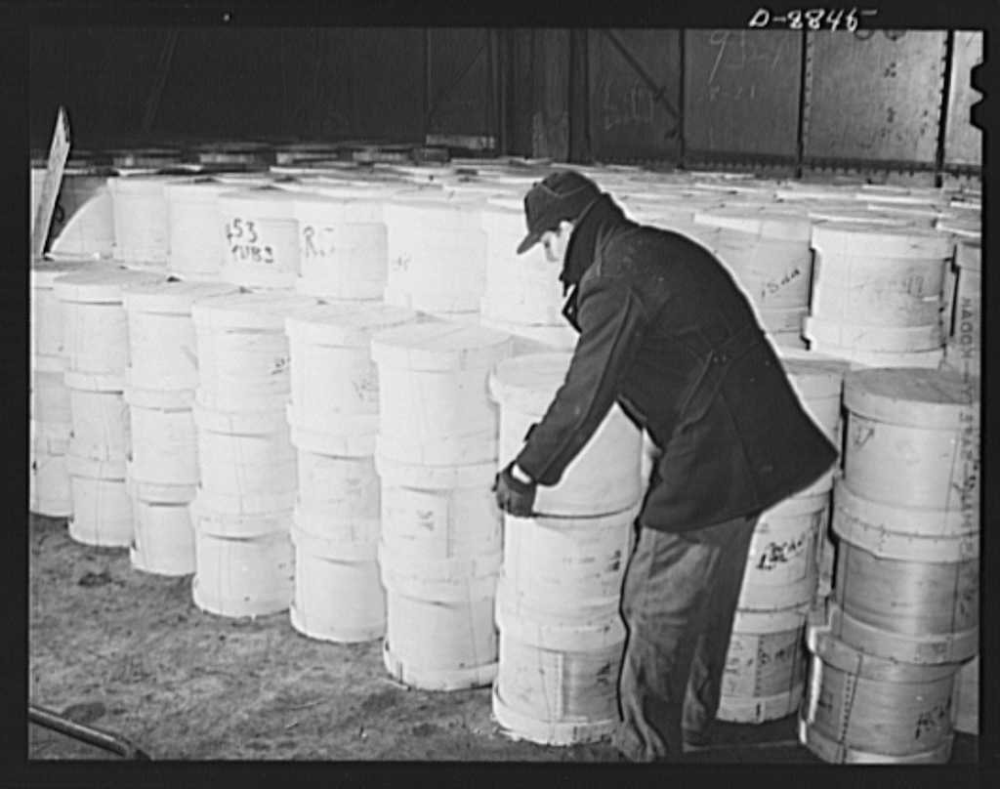

Figure 7.1

World War I veterans returned to the nation’s capitol as Roosevelt took office, seeking early payment of their enlistment bonus. Although neither President Hoover nor Roosevelt agreed to meet with the men, Eleanor Roosevelt and a number of congressmen did. In this photo, Texas congressman Wright Patman and Mississippi’s John Rankin collect petitions from members of the Bonus Army.
Franklin Delano Roosevelt (FDR) inherited a banking system on the verge of collapse and an economy where 12 million job-seekers could not find work. The stock market had declined by over 80 percent, while average household income was just above half of what it had been in the late 1920s. The scale of human suffering was particularly devastating for the 2 million families who lost homes and farms and the 30 million Americans who were members of households without a single employed family member. Perhaps most frustrating was that one in five children was chronically malnourished, while US farms continued to produce more food than the nation could possibly consume. Prices for some farm goods remained so low that millions of tons of food were wasted because it cost more to transport certain items than they would generate in revenue if sold. A similar tragedy existed in the form of warehouses that remained full of coats and other necessities, while millions of Americans lacked the ability to purchase them at nearly any price.
The nation wondered how their new president would fulfill his promise to relieve the suffering and get the nation back to work. Roosevelt had promised a “New Deal” but offered few details of how that deal would operate. In May 1933, a small group of veterans of the Bonus Army decided to return to Washington and see for themselves if the new president would be any more supportive of their request for an early payment of their WWI bonuses. He was not. In fact, three years later, Roosevelt would veto a bill providing early payment, a bill Congress eventually passed without his signature.
However, in 1933, Roosevelt’s treatment of the men and their families showed a degree of compassion and respect that demonstrated Roosevelt had at least learned from the public outrage regarding Hoover’s treatment of the Bonus Army. Rather than call out the army, Roosevelt provided tents and rations. Eleanor RooseveltA leading public figure who assisted her husband’s rise through New York and national politics, Roosevelt also transformed the position of presidential spouse. She traveled and advocated a number of liberal causes from women’s rights to civil rights. The president supported some of these causes, but feared his direct advocacy of controversial subjects such as civil rights would jeopardize his electoral support. Because of her popularity, Eleanor Roosevelt’s conferences were covered by every major news outlet and her decision to only admit female reporters to these conferences created many new opportunities for women in journalism. met with the men and promised that the administration would eventually find them jobs. She kept her promise, as World War I veterans were recruited for jobs in new government programs such as the Civilian Conservation Corps. Although this particular program was limited to those below the age of twenty-five, veterans were exempt from the age requirement. One of the veterans was said to have offered a simple comparison that reflected the difference between the two presidents. “Hoover sent the army,” the oft-quoted remark began, “Roosevelt sent his wife.” Those who know Eleanor Roosevelt understand that she likely met with the veterans on her own initiative. On this and many occasions, the president demonstrated his wisdom by at least partially deferring to the judgment of his most talented advisor.
The provisions of the Twentieth Amendment to the Constitution shortened the time period between the November election and inauguration of the president from March 4 to January 22. This interim was known as the “lame duck” period and featured several months where the outgoing president remained in office. Because the Twentieth Amendment would not take effect until 1933, Hoover continued to preside over a nation whose banking system was teetering toward collapse.
An assassin’s bullet just missed president-elect Roosevelt in February of that year, instead killing Chicago mayor Anton Cermak while the two men were talking. Cermak’s death was mourned by Chicagoans and supporters of Progressivism nationwide. The Czech immigrant had risen through Chicago politics and defeated the Republican machine that was operated by city boss “Big Bill” Thompson. Thompson’s political machine had dominated the city in previous decades and was allegedly connected to organized crime figures such as Al Capone. Cermak reportedly turned to Roosevelt after the bullet hit him and said that he was glad the new president had been spared. While this mythical expression of the nation’s support for their president-elect became legend, most Americans were skeptical that their future leader was up to the challenge before him.
The new president still had not offered many specific details of how he planned to combat the Depression, and news of political gamesmanship between the outgoing and incoming presidents concerned the nation. Communications between Hoover and Roosevelt were full of posturing and intrigue. Hoover insisted that any meeting be held at the White House—a not-so-subtle reminder that he was still the president. Roosevelt wanted Hoover to meet him outside of the White House for similar prideful reasons. Hoover sought Roosevelt’s endorsement of several of his plans, a defensible request given the impending transfer of power. However, Roosevelt was suspicious that Hoover’s apparent goodwill was really an attempt to transfer responsibility for any consequences onto the new president. By Hoover’s perspective, Roosevelt’s intransigence was a political calculation based on making sure the nation’s economy did not turn the corner until he took office. The tragic result was that little was accomplished in the months between the election and Roosevelt’s inauguration.
Figure 7.2

Hoover and Roosevelt sit together on Inauguration Day. As the photo indicates, the two men shared reservations toward each other and did not work together during the period between the election and Roosevelt’s inauguration.
Bank foreclosures and bank failure did not wait for Inauguration Day. Every state placed restrictions preventing depositors from withdrawing more than a certain amount or a percentage of their holdings each day. Some areas suspended banking operations completely in an attempt to keep the entire system from imploding. Upon assuming office, the president declared his first priority was to restore order in the banking system. He announced that all banks would close for a four-day “holiday” while Congress met in an emergency session. Roosevelt assured the American people that the “nameless, unreasoning, unjustified terror” that gripped the nation was the only thing they needed to fear. The nation’s factories and farms were still productive, the president reminded his listeners. These productive centers had fueled the growth of America and would continue to do so if only they could recover from the financial instability that was born of uncertainty rather than any fundamental flaw in their design, the nation’s infrastructure, or the national character.
The president’s Emergency Banking Relief BillA law granting federal examiners the authority to examine the records of banks and determine which institutions were financially sound. All banks that passed this examination were permitted to reopen with the added security of the federal government’s commitment to provide additional funds if needed to ensure the financial stability of the bank. helped to restore confidence by pledging federal backing of the nation’s banking system. The bill was passed by unanimous consent in the House and by an overwhelming margin in the Senate on March 9, 1933. Due to the pervasive sense of emergency at that time, there was very little debate on the bill and most legislators never even read the legislation. However, most legislators understood and supported the fundamental changes to the banking system that would result. The new law granted the government the power to evaluate the financial strength of each bank. Those banks that passed inspection were allowed to receive unsecured loans from the federal government at low interest rates to help them through the crisis. The law also granted the federal government the authority to reorganize and reopen banks. Most importantly, Roosevelt committed the federal government to provide loans to banks to prevent them from failing.
The emergency law did not yet create the explicit guarantee of federal insurance for banks, although this guarantee would be part of legislation that would be passed later in Roosevelt’s term. However, the president delivered a well-conceived speech that was broadcast throughout the country. In this address, Roosevelt explained how the emergency law would prevent bank failures in the near term. The president’s radio address succeeded as banks reopened to long lines of depositors—a welcome sight given the recent history of panicked crowds waiting outside banks to withdraw funds. Conservatives and business interests were relieved that the president had used the power of the federal government to bolster the existing financial system rather than seek more radical change. Consumers were equally pleased to find that the government would take steps to protect the money they deposited in banks. The sudden wave of depositors also demonstrated the trust most Americans still had in government and the basic infrastructure of America’s financial system. Roosevelt would continue to use radio addresses, which he later dubbed “fireside chats,” to explain his policies directly to the people.
Figure 7.3

President Roosevelt sought to explain his policies directly to the public through a series of radio addresses he called “fireside chats.”
At the same time, Congress’s ready acceptance of a sweeping law that effectively gave the Roosevelt administration control over the fate of every private bank in the nation alarmed some observers. Even those who favored the banking bill worried that the balance of power between the executive and legislative branches had shifted in ways that could lead to unintended consequences. In addition, over one hundred members of the legislature were newly elected Democrats unaccustomed to Washington politics and perhaps overly eager to support the Roosevelt administration. Roosevelt’s unassuming personality and apparent sincerity helped to reduce this criticism, but not all in Washington or in the nation supported the new president. Others who were more skeptical had grown so frustrated by the perceived inaction of the previous years that they seemed willing to let Roosevelt and the Democrat-controlled Congress try anything.
Roosevelt enjoyed Democratic majorities in both the Senate and the House, and so in 1933, his critics could do little but warn of the possibility that the new president might abuse his powers. This message of warning and dissent remained largely in the background until 1937 when the economic recovery of the president’s first term crumbled in the midst of a second Wall Street crash. Until that time, Roosevelt sought to create goodwill among the various interests of labor and capital by inviting representatives of unions and businesses to help shape legislation. Throughout his first four years in office, Roosevelt enjoyed widespread popular support. Although he was able to pass nearly every one of the laws his advisors recommended during these years, securing lasting economic recovery would prove more difficult for the new president.
The emergency banking bill was merely the first of many sweeping changes the Roosevelt administration guided through Congress in the one hundred days between March 9 and June16, 1933. Together with other bills passed during the subsequent sessions of Congress between 1934 and 1936, Roosevelt created the basis of what would later be known as the New DealA series of economic reforms and programs that were supported by the Roosevelt administration and approved by Congress during Roosevelt’s first term. These programs sought to stabilize the banking industry and monetary and agricultural markets and provide temporary jobs.. For the first one hundred days of his administration, and for his first three years in office, nearly every proposal Roosevelt endorsed and sent to the floor of Congress was passed by large majorities. Not since George Washington had a US president enjoyed such influence over his nation’s government. For some, even the depths of the Great Depression could not justify the concentration of so much power into the hands of one man.
Part of the reason Congress went along with Roosevelt was that the changes his administration introduced were not as radical as his critics had feared. Roosevelt refused to consider having the federal government take direct control of banks or factories—a strategy known as nationalization that would become common in Socialist nations and dictatorships. Roosevelt sought advice from a rather conservative-minded group of well-educated and successful individuals. Known informally as the “Brains Trust,” Roosevelt’s informal advisers shared the perspective and background of other influential leaders in business and hoped to reform rather than replace the nation’s economic system.
Representing the best and the brightest in many fields, Roosevelt’s advisers offered a variety of ideas. The president tried nearly all of them in one form or another. In addition to this informal advisory team, Roosevelt appointed a number of well-qualified individuals to his cabinet. Secretary of Labor Frances Perkins and Interior Secretary Harold IckesSecretary of the Interior and one of the most influential members of the Roosevelt administration, Ickes was overseer of various federal works projects and supported greater autonomy for Native American tribes. were two of the most influential cabinet members, and many of the strategies the president attempted were those supported by Perkins and Ickes.
Figure 7.4

Frances Perkins was an influential member of Roosevelt’s cabinet and one of the architects of the New Deal as the secretary of labor.
Frances PerkinsThe longest-serving Secretary of Labor and the first woman in the cabinet, Perkins skillfully represented the concern of labor leaders within the administration. Although she often worked to secure the support of business leaders, she was consistent in her belief of the right of workers to bargain collectively with their employers. was able to secure the support of organized labor behind the president’s plans while also finding support among the leading business men of her day. Ickes administered the public face of the New Deal—government-funded construction projects meant to provide jobs while developing the nation’s infrastructure. Although each of the New Deal Programs Roosevelt’s advisers championed represented a fundamental change in the expectations of the federal government, many of them were also similar to those being considered by the Hoover administration in the year before Roosevelt’s inauguration. The crucial difference was that under Roosevelt, federal programs to stimulate the economy operated on a much more ambitious scale.
By the mid-1930s, the federal government was borrowing hundreds of millions of dollars each year. One-third of the federal budget was spent on public employment projects and relief for the poor. At the same time, federal budget deficits still represented a relatively small percentage of the GDP (gross domestic product)—the total market value of all goods and services produced each year. Federal spending during the Depression was certainly greater than any peacetime period in the nation’s history, but it still represented only a fraction of what the government spent during World War I. In addition, the US government would spend more in one year fighting World War II than was spent funding every New Deal program combined.
However, throughout its history the nation had tolerated large deficits and the expansion of government power during wartime and expected contraction and thrift during peacetime. The idea that the government should borrow money and provide direct employment during recessions and depressions had been raised since the 1830s but had never been seriously considered by federal leaders until the beginning of the Great Depression. For example, during a recession at the turn of the century, a group of men called Coxey’s Army marched to Washington asking the government to borrow money to provide jobs for the unemployed. These men were branded as radicals, and leaders such as Jacob Coxey were arrested. Keeping this background in mind, one can see why each of the following programs approved during Roosevelt’s first one hundred days reflected a very different way of viewing the role of the federal government.
Figure 7.5

Young men at work building a trail as part of a Civilian Conservation Corps project. The CCC employed young men between the ages of eighteen and twenty-five, as well as a number of veterans of all ages who needed work.
The New Deal, like all major legislative reforms, was not simply concocted by members of the Roosevelt administration. Its provisions were the result of hundreds of grassroots initiatives by union workers and the unemployed who created the New Deal through participation in local, state, and national politics. For example, rank-and-file workers in Chicago created and participated in many organizations that communicated their ideas to local government leaders. For the first time in the city’s history, the majority of these organizations were not based around ethnicity or a particular craft. Instead, they represented ideas and perspectives that crossed these fault lines that had divided workers in the past.
Support for the federal government directly providing jobs for the unemployed or arbitrating conflicts between labor and management had been building for several generations. The Great Depression led to an increased level of activism among workers who believed that the federal government must intervene on behalf of the common citizen. Local political machines had failed to insulate cities and states from the Depression, while the paternalism and generosity of welfare Capitalism displayed its limits. For example, in 1931, Henry Ford blamed the Depression on the character faults of workers. “The average man won’t really do a day’s work unless he is caught and cannot get out of it,” Ford declared. Later that same year, Ford laid off 60,000 workers at one of his most productive plants.
Private industry and banks were unable to stimulate recovery, and many leading businessmen beyond Henry Ford seemed indifferent to the plight of workers. In response, the Roosevelt administration became more willing to consider the perspectives of the unemployed and the poor. At the same time, Roosevelt was a member of the upper class and shared many of the same conservative beliefs regarding the role of government, as did business leaders and previous presidents. Like Hoover, Roosevelt was an outspoken opponent of expanding the dole—the epithet applied to state and local welfare programs that distributed food and money directly to the needy. He was also sensitive to the ideas of industry and believed that the only way out of the Depression was to create a more favorable business environment through government intervention.
The Roosevelt administration looked toward the War Industries Board of the previous decade as a model for how to achieve both greater prosperity and increased production. Government planning had worked during World War I, Roosevelt’s advisers believed, arguing that government intervention could also help revive several industries where prices had declined below the point of profitability. Representatives of workers and the unemployed also convinced Roosevelt that public works projects were necessary to provide immediate employment until the economy and the private sector recovered.
As a result, the New Deal sought to promote two objectives. First, it would provide “workfare” rather than welfare by offering short-term employment in public works projects. Second, it would seek to create a more well-ordered economic system that encouraged the recovery of the private sector in the long run. Key to the operation of this system would be the incremental termination of federal public works programs once private industry began to recover. If government employment continued too long, they believed, these federal programs would compete for workers and prevent America’s factories from fully recovering and resuming full production.
Representing these twin goals of relief through public employment and recovery through economic planning, the National Industrial Recovery Act (NIRA) created two massive agencies. The Public Works Administration (PWA)Created by the National Industrial Recovery Act, the PWA was a federal works program that generally worked with private contractors to create major public works projects. would oversee Roosevelt’s “workfare” relief program with a budget of $3 billion in its first year. The PWA contracted with private construction firms to build a variety of public works projects. Among the projects of the PWA were the Grand Coulee Dam in Washington State, the Lincoln Tunnel connecting New Jersey with New York City, the Overseas Highway connecting the Florida Keys, and the San Francisco-Oakland Bay Bridge. Although many doubted the usefulness of air power at the time, the PWA’s decisions to build the aircraft carriers Enterprise and Yorktown would later prove to be two of the most important decisions made during the New Deal.
The second provision of NIRA soon became both the most ambitious and most controversial program of the entire New Deal. The National Recovery Administration (NRA)Also created by the National Industrial Recovery Act, the NRA sought to create trade unions representing various industries that would create codes regulating wages, prices, and production. The goal was to provide a more ordered economy and eliminate overproduction that led to unnaturally low prices and low wages. Critics suggested that the NRA created cartels controlled by the largest firms to reduce production while increasing prices. The NRA was declared unconstitutional by the US Supreme Court in 1935. created planning councils that established codes governing each industry. For example, the automotive trade council was led by representatives of major car manufacturers, labor unions, and government officials. Together, this council would determine how many and what types of automobiles would be built, the prices of these vehicles, minimum wages, and other provisions that would guarantee both profitability and the well-being of workers.
The central idea behind the NRA was that without these quotas and minimum standards, car manufacturers (and other businesses) would continue to engage in cutthroat competition with one another. This was important because the Depression decreased the number of consumers to the point that manufacturers were forced to sell their products at or below cost. NRA supporters believed that industry-wide coordination and planning would ensure that manufacturers only produced the number of products that would sell at a predetermined price. Included in this price was a reasonable profit that would permit employers to pay their workers a better wage. In return, employees of these companies could enjoy a measure of financial security and once again become consumers whose discretionary spending had fueled the growth of the 1920s.
Although this kind of central planning might be well-intentioned, many Americans feared that unintended consequences would occur. They feared that planning councils would be controlled by a few corporations within each industry, thereby creating cartels that could operate without any fear of competition. Such a system would permit manufacturers to keep production so low that prices could be increased dramatically. If this occurred, the result would be large profits for industries that intentionally limited production in ways that prevented job growth. Others feared the government would control these planning councils, promoting the growth of Socialism. Defenders of the NRA argued that neither cartelization nor Socialism would develop so long as each council shared power between heads of industry, labor unions, and government regulators. Government planning had worked in World War I, they argued, while the ruinous competition of the unregulated free market had led to the excesses of the 1920s and would likely prolong the current Depression. Equally important, NRA defenders argued, was the fact that participation in the NRA was voluntary. The decisions of planning councils were merely codes rather than law, and businesses were still free to practice free market principles if they did not like the codes in their industry. However, refusal to participate in the NRA was not without its own consequences. Only those businesses that participated could display the NRA’s Blue Eagle in their storefronts and on their products. Failure to participate in the NRA was considered unpatriotic, and the government suggested consumers boycott any business that rejected the NRA’s codes.
Figure 7.6
Participation in the NRA was voluntary, but only businesses that followed the codes in their industry could display the Blue Eagle Emblem on their products or in their stores.
Volunteerism could only be effective if the majority of businesses in any given industry participated in or at least abided by the decisions of the NRA’s planning councils. In the first years of the NRA, most industries did participate. However, this level of participation was only achieved by allowing the largest companies in any industry to draft codes allowing them to reduce production and increase prices. While this might encourage stability, critics argued that the NRA was actually preventing economic recovery while violating free market principles. In 1935, the Supreme Court agreed with the critics of the NRA, who argued that the agency violated principles of limited government and free enterprise and placed too much power in the hands of the federal government.
Although the NRA was ruled unconstitutional, it inspired a number of important changes. To provide more jobs for heads of households, the NRA prohibited child labor and set the workweek at forty hours. The NRA also included minimum wages and required companies to pay 150 percent of a worker’s normal hourly wage for every hour he or she worked beyond forty hours. Each of these measures had long been goals of the labor movement. Although the forty-hour week and overtime pay were merely codes and not laws, they were now supported by the federal government. The main reason the government supported these measures was to encourage businesses to hire more workers as a means of reducing unemployment.
Subsequent legislation in Roosevelt’s first year included the creation of the Civil Works Administration (CWA). The CWA provided federal jobs for 4 million Americans between its creation in November 1933 and its termination only four months later. The majority of CWA workers were employed in small-scale construction and repair jobs, but the CWA also hired teachers in economically depressed areas. Critics charged the CWA with providing needless jobs, such as raking leaves in parks. Given the speed with which the CWA payroll grew and the lack of a bureaucratic structure to secure the needed planning and resources for meaningful projects, such criticism was often well placed. The program’s expenses grew faster and larger than the Roosevelt administration had anticipated until the CWA was eliminated in March 1934. However, the CWA would serve as a model for future projects by directly employing workers rather than operating through private contractors. At the same time, it provided a cautionary tale about the need for planning and direction before launching a nationwide public works program.
The white and black workers in the South cannot be organized separately as the fingers on my hand. They must be organized altogether, as the fingers on my hand when they are doubled up in the form of a fist.…If they are organized separately they will not understand each other, and if they do not understand each other they will fight each other, and if they fight each other they will hate each other, and the employing class will profit from that condition.
—A. Phillip Randolph
The Roosevelt administration created several programs that were aimed at providing targeted relief within a particular region, but none was as ambitious as the Tennessee Valley Authority (TVA)A regional New Deal agency that sought to bring low-cost electrical power to one of the most depressed areas of the country by constructing hydroelectric dams. The TVA also sponsored a number of infrastructure projects, as well as health and educational initiatives.. Inspired by the president’s emotional visit to an economically depressed region of the South, the TVA sought to provide direct employment through the construction of roads, buildings, bridges, and other projects. Most importantly, the TVA built hydroelectric dams to bring low-cost electricity to the area that would encourage commercial and industrial development. Many critics were understandably concerned about the environmental consequences of building dams all along the Tennessee River. In addition, many rural families who lived in the river valley were displaced in the process of construction. However, the TVA succeeded in spurring the growth of factories that brought modest prosperity to an area that had been among the most economically depressed regions of the country.
Figure 7.7
A family near Knoxville that was displaced by one of the Tennessee Valley Authority (TVA) projects.
Not all residents of the Tennessee River Valley shared equally in the progress. Only 1 percent of TVA employees were black, and these individuals faced segregation while at work. Later New Deal public works programs such as the WPA would fare better, expanding from a workforce that was 6 percent black to one that was just over 13 percent. Few of these workers had any opportunities for advancement, as only eleven out of the 10,000 Southern WPA supervisors were African Americans. However, for the small number of black families who found work with the TVA, as well as the thousands of white families, the TVA was nothing short of a godsend. It was also a political boon for Roosevelt. Northern progressives hoped the government would launch similar projects around the country, while Southern conservatives cheered their president’s economic support for their region. The creation of the TVA represented the first federal support for development of the South outside of Virginia or the Atlantic Coast. After generations of opposing the growth of the federal government, Southerners welcomed federal intervention once it was directed at the development of their infrastructure and economy.
The TVA would prove enormously successful and was one of the most popular programs of the New Deal. Nevertheless, it would take many years for dams to generate electricity that would fuel an industrial revolution throughout the Tennessee River Valley. For those living in the Deep South who were still largely dependent on cotton, the TVA offered little assistance. The price of cotton declined to half of its 1920 price at the start of the Depression. For farmers and sharecroppers in the South, as well as the millions of farmers in the Great Plains and Far West, immediate relief was imperative.
One of Roosevelt’s first programs was the creation of a federal agency that provided refinancing for the millions of farm families who could no longer afford their mortgages. Roosevelt’s next challenge was to alter the fundamental problem that had led to the mortgage crisis—the rapidly declining prices for agricultural commodities. Roosevelt’s solution was the Agricultural Adjustment Act (AAA). This agency offered direct payments to farmers who agreed to reduce their production. For example, an Iowa farmer who grew corn on 200 acres would be offered an amount equal to the profit he might expect to receive on 50 acres if he simply agreed to plant only 150 acres the next year.
Because the AAA was not approved until May 1933, farmers had already planted their crops, so the AAA paid them to plow their crops. For millions of starving Americans, the federal government’s decision to pay farmers to destroy crops and slaughter millions of pigs was the cruelest irony. In fairness, the AAA quickly adjusted its tactics and purchased crops and meat which were distributed to needy families. However, the AAA’s payments proved devastating for those who worked the land but did not own it. Landowners were effectively being paid to evict tenants, sharecroppers, and other farm laborers whose labor was no longer needed as a result of reduced production.
The AAA resulted in an immediate stabilization of farm prices, an important goal considering that a third of the nation depended on farm prices for their livelihood. The Supreme Court declared a few provisions of the law that rendered the AAA unconstitutional, but this action merely led to relatively minor modifications in the way the AAA was funded and administrated. Although the AAA was favored by farmers and is generally considered a success, one of the leading reasons for the increase in farm prices was the result of an ecological disaster that reduced crop yields on 100 million acres of farmland.
Irrigation permitted farmers to develop nearly every acre of flat soil in the Southern Plains. An extended drought in the mid-1930s turned much of this topsoil to dust. The natural vegetation of the Southern Plains had deep root structures, which had secured the topsoil from erosion for centuries, even during similar times of drought. However, several decades of commercial farming had altered the ecological balance of the Plains in ways that left it vulnerable. Winds blew across the treeless prairies, taking the dusty topsoil with it and creating the ecological disaster known as the Dust BowlAn ecological catastrophe during the mid-1930s within the Southern Great Plains. The Dust Bowl featured windstorms that removed the topsoil of 100 million acres of farmland. This topsoil had largely turned to dust as a result of drought and erosion..
The crisis of the Dust Bowl was so severe for farmers and those in cities who depended on the business of farmers that one in six Oklahoma residents abandoned the state during the 1930s. About 800,000 farmers and others who were dependent upon the farming industry were displaced as these lands were no longer productive. Most of these individuals headed to the West due to rumors of available jobs in California. However, jobs were also scarce along the West Coast, and the arrival of new job seekers led to tensions between these predominantly white refugees and Asian and Hispanic farm workers. The new arrivals were derisively labeled as “Okies,” regardless of what state they had migrated from, while nonwhite Californians were derided as un-Americans, regardless of how long they or their families had lived in the area.
Figure 7.8

Montana’s Fort Peck Dam was a Public Works Administration project that created one of the largest man-made lakes in the world when it was completed in 1940.
These dams and aquifers also created the possibility of irrigation, which could open millions of acres of previously arid land to farming. Cautious that such a course of action would further depress farm prices and possibly recreate the environmental disaster of the Great Plains, government policy restricted the use of water for farming and ranching in some areas of the West. However, many of these restrictions were ignored or modified. Before long, federal projects were directed toward facilitating the growth of industry and cities in some regions of the West. The result was rapid growth of the urban West in the next few decades that would encourage the most significant population shift in US history since the Homestead Act of 1862.
As the Dust Bowl demonstrated, aridity continued to define the American West. However, some New Deal initiatives sought to alter the region’s ecology and transform the West through the creation of massive dams that would provide both electricity and water for certain areas. Much like the TVA, the New Deal of the West placed its hopes in commercial development through damming rivers. The federal government demonstrated the almost limitless possibilities of American labor and engineering by constructing the Boulder Dam, which was later renamed in honor of President Hoover. The Hoover Dam spanned the Colorado River and was instrumental to the urban growth of Las Vegas, Phoenix, and Southern California. Similar dams were built in Washington State and across the Sacramento River.
The Great Depression bolstered isolationism within the United States and likely influenced the decision to withdraw troops from Haiti and Nicaragua in the early 1930s. Roosevelt put an end to the Platt Amendment’s provisions granting US sovereignty of Cuban affairs, with the exception of the US naval base at Guantanamo Bay. These changes signaled the beginning of Roosevelt’s Good Neighbor PolicyA policy aimed at improving relations with Latin American and Caribbean nations by removing US soldiers from these areas and demonstrating greater respect for the right of these nations to govern themselves. The policy was supported by Roosevelt, although many Latin American historians disagree about the sincerity of US commitment to nonintervention in Latin American affairs during the 1930s and beyond., which would mark a new age in US foreign policy in the Caribbean and Latin America.
In contrast to the frequent military interventions and economic imperialism that had typified the last few decades of America’s relations with the region, Roosevelt declared that no nation “has the right to intervene in the internal or external affairs” of their neighbors. Humanitarian concerns mixed with economic self-interest in forming Roosevelt’s new policy, as many Americans suspected that their tax money was being squandered abroad. Others believed that America’s foreign policy was aimed at exploiting the land and labor of Latin American nations when it should be used to fund projects that spurred development at home.
Figure 7.9

The United States Marine Corps in Nicaragua in 1932. Shortly after taking office, Roosevelt recalled these soldiers and many others deployed in Latin America as part of his “Good Neighbor Policy.”
Perceptions of self-interest likewise drove the decision to grant eventual independence to the Philippines, as long as the United States could maintain its naval bases in the region. The agreement granting Filipino independence also created a proviso that stripped Filipinos of the opportunity to work in the United States. This provision subjected any would-be migrants to the provisions of the 1924 National Origins Act, which placed quotas on the number of foreigners who could immigrate to the United States. Despite the fact that the Philippines would remain a US territory for another twelve years, by applying the terms of the 1924 law, only fifty Filipinos were permitted to enter the United States each year.
A different brand of isolationism led the Roosevelt administration to reconsider his earlier commitment to actively participate in the London Economic Conference of 1933. Partially as a result of non-US support, the conference failed to resolve international currency problems. Although it may be unfair to blame the Roosevelt administration for its unwillingness to actively devote itself to the stabilization of European currency, the rapid inflation of the 1920s and 1930s would contribute to the ease by which dictators seized power in central Europe. However, the Roosevelt administration would demonstrate great foresight in seeking to provide aid to England and the other nations willing to stand up to those dictators during his third term in office.
In the meantime, Roosevelt shocked many with his decision to open diplomatic and trade relations with the Soviet Union for the first time since the Russian Revolution of 1917. In addition to the desire to open US goods to new markets, Roosevelt hoped diplomacy would help to counter the growing menace of Japan and Germany. Humorist Will Rogers would comment that Roosevelt would have likely agreed to open diplomatic relations with the devil himself if only he would agree to purchase some American-made pitchforks. History would provide a kinder assessment, as Roosevelt’s overtures to the Soviets helped to thaw relations between the two leading nations in ways that would have a profound impact on the outcome of World War II.
Kelly Miller, an African American sociologist at Howard University labeled the black worker during the Depression as “the surplus man.” African Americans were the first to be fired from jobs when the economy slowed, Miller argued, and they were the last to be hired once the economy recovered. Miller’s description was accurate not only for black Americans but also for women, Native Americans, Asian Americans, and Hispanics. For the first time, each of these groups had a voice in the White House. However, that voice was not the president. While Franklin Roosevelt focused his efforts on securing the electoral support of white Southerners and the cooperation of conservative Southern Democrats in Congress, Eleanor Roosevelt spoke for the “surplus” men and women.
Eleanor Roosevelt demonstrated her commitment to unpopular causes at the 1938 Southern Conference for Human Welfare in Birmingham, Alabama. The conference was an interracial coalition of Southern progressives founded the previous year. The group was dedicated to finding ways to provide greater economic opportunities for Southerners. Although they were not necessarily civil rights activists, for the first two days of the conference, members refused to abide by Birmingham law, which forbade interracial seating. When notified of the violation, police chief Bull Connor arrived and notified the participants that they would be arrested if they did not separate themselves into “white” and “colored” sections.
No woman has ever so comforted the distressed or so distressed the comfortable.
—Connecticut Congresswoman Clare Boothe Luce describing Eleanor Roosevelt.
Bull Connor would become notorious during the 1960s for his use of police dogs and other violent methods of attacking those who defied the city’s segregation ordinances. When Connor ordered the segregation of the 1938 meeting, the predominantly male audience rushed to comply. At that moment, Eleanor Roosevelt picked up her chair and sat in the aisle between the two sections, defying the segregationist police chief to arrest the First Lady of the United States. For this and dozens of other small acts of wit and courage, Eleanor Roosevelt was daily maligned by journalists who assaulted her character and integrity in gendered terms. Later interpretations of history would offer a different perspective on her character and integrity. While Eleanor Roosevelt adopted many of the conservative ideas about race and gender that typified those of her racial and economic background, she also challenged ideas about race, social class, and gender in ways that made her one of the most courageous and important Americans of her time.
The New Deal reinforced existing gendered assumption about the family and paid labor. The Economy Act of 1933 established procedures requiring government agencies that were reducing their workforce to first establish which of their employees had spouses who already worked for the government and fire these employees first. Although the law made no mention of gender, it was understood that married women were the ones that were to be let go. A 1936 survey revealed that most Americans believed such measures to be fair given the scarcity of jobs for male breadwinners. When asked if married women whose husbands were employed full-time should work for wages, 82 percent said no.
Figure 7.10
This WPA poster advertised the availability of maids who had completed training programs and were ready for domestic labor. Women were not encouraged to enter manufacturing fields as they would be during World War II due to the belief that doing so would take away a job from a male head of household.
The public also tended to approve of the practice of paying men higher wages for the same jobs. For example, male teachers were usually paid at least 40 percent more than women; in addition, principals and administrators were nearly always male. In fact, many times when a woman acted as the lead administrator in a school with all-female faculty, she was not listed as the principal, despite the clear expectation that she would perform these duties. In addition, married female teachers were often expected to quit their jobs—a traditional view that had eroded in recent decades but was revived as policy in some school districts during the Depression.
Single women without children might find work in schools but were often ineligible for other government jobs during the Depression. These gendered policies diverged significantly from programs such as the CCC, which employed millions of young men, and the jobs of the National Youth Administration, which were almost exclusively male. Women’s leaders such as Eleanor Roosevelt protested the inherent gender bias in these programs and were able to secure some work camps for nearly 10,000 young women.
Gendered notions of family and work made it especially difficult for women seeking jobs through the PWA, TVA, and the rest of the “alphabet soup” of federal programs. Only the WPA directed any specific action toward providing jobs for women, although these were usually in low-paying clerical and service positions. Even at its peak in 1938, only 13 percent of WPA workers were women. In addition, federal and state government policies encouraged private-sector employers to hire male heads of households first.
Those fortunate enough to find a job in the private sector found that the labor codes established by the NRA endorsed gender-specific pay scales that restricted women to certain kinds of jobs and still paid them less than men in many of those positions. The WPA itself did not permit explicit pay differentials, so men and women who worked the same jobs in WPA programs received the same pay. However, most women who worked for the WPA were relegated to low-paying clerical or “domestic” fields, such as preparing meals or sewing uniforms for male workers.
The Depression saw little advancement for the women’s movement. The pay differential between men and women working the same job remained at 60 percent, while the average salary for women was half that of men. The percentage of women in the paid workforce, which had steadily been rising, stalled at one in four workers. However, the number of careers open to women and the pay they received would expand in future decades, thanks to the number of women who joined the labor movement during the 1930s. The number of union women grew 300 percent during the decade as 800,000 women joined organizations such as the International Ladies Garment Workers’ Union.
Feminists also continued to advocate for legal equality for married women. Prior to the 1920s, American women surrendered their citizenship if they married a man who was not a US citizen. The same was not true for US men, who could become dual citizens if they went abroad, while marriage led to automatic citizenship for their wives and dependents who chose to come to the United States. In the 1920s, the Cable Act provided a way for married women to retain their American citizenship as long as their partners were at least eligible to become citizens—a provision that was partially directed at discouraging American women from marrying Asian immigrants. In 1931, women secured an amendment to the Cable Act that permitted women to retain their citizenship regardless of their husband’s status. Although the provision affected very few women, it was a symbolic victory and helped to further efforts of feminists who sought to protect the legal identity of married women.
A much more overt symbol of women’s advancement during the 1930s was the proliferation of women in leadership roles in government, women such as Frances Perkins and Mary McLeod Bethune. Perkins was raised in relative comfort and excelled in college with degrees in both the physical and social sciences. She chose to keep her name in marriage and was one of the first women to identify herself as a feminist during a meeting of women’s leaders in 1914.
Although Perkins also identified herself as a supporter of revolutionary change for women, she also believed that fundamental differences between men and women needed to be considered in the labor market. She favored laws specifically designed to protect women by limiting the maximum hours they might legally work, a perspective that put her at odds from many other feminists who supported the Equal Rights Act. Perkins is best known as the first woman to serve in the cabinet, and it is in that capacity that her legacy as a women’s rights activist remains. Perkins was the second longest-serving and perhaps the most influential member of Roosevelt’s cabinet, gaining the trust and support of labor and business leaders in the nearly exclusive male world of 1930s industry.
Figure 7.11
Mary McLeod Bethune emerged from poverty in South Carolina to become one of the most influential women in US history. She advised President Roosevelt on matters regarding race, led the National Council of Negro Women, and founded a college in Florida.
Roosevelt relied so heavily on the advice and support of Mary McLeod BethuneA leading educator and founder of Bethune-Cookman College, Bethune advised Roosevelt on matters of importance to African Americans and coordinated meetings of national black leaders known as the “Black Cabinet.” that he considered her the leading member of his “Black Cabinet,” an unofficial group of black leaders who advised the president on matters of race. The fifteenth of seventeen children of rice and cotton farmers in South Carolina, Bethune rose to become one of the premiere educators of the 1930s. The only school that was available to Bethune and her siblings in her youth was operated by a church several miles from her home. With the support of her family and neighbors, Bethune was able to attend this school. She quickly developed a love of books and an appreciation of education as the key to empowerment for her people.
In 1904, Bethune turned her home in Daytona, Florida, into a school for young black women. This school expanded into a teacher’s college and is today known as Bethune-Cookman College. Bethune also used her home as a headquarters for courses to prepare adults to pass the various exams that were required of African Americans who sought to register to vote. Despite physical threats by dozens of Klansmen, Bethune helped to register hundreds of black voters for the first time in South Florida. In 1935, Bethune founded the National Council of Negro Women and also served as President Roosevelt’s advisor on race relations. The following year, Roosevelt appointed her as Director of the Division of Negro Affairs of the National Youth Administration, making Bethune the first African American to head a federal agency.
During the 1930s, Bethune emerged as the most revered black educator since the death of Booker T. Washington. Like Washington, Bethune transformed a one-room school into a college. However, Bethune was far more assertive about her belief in black equality and even directly challenged Klansmen. Bethune also had experience leading schools from the Southern cotton fields to the Chicago slums. As her prestige increased, she traveled the nation as Washington once did, but did so in her own unique style. Not only was she known for her flair for fashion and her strong sense of racial pride, Bethune also refused to accommodate racial slights; her manner disarmed those who might be offended by a powerful black woman. When a white Southerner who was also a guest visiting the White House referred to her as Auntie—a carryover from the paternalism of slavery—Bethune smiled and inquired which of her many brothers and sisters were his father or mother.
Figure 7.12

One of the WPA projects involved the documentation of folk music throughout the nation. This African American musician was photographed as part of this work, although few black musicians and artists were hired by the WPA directly.
The majority of black voters shifted their loyalty from the Republicans to the Democrats during the 1930s. The shift was both a reaction against the Republican Party and a result of Roosevelt’s tentative support for civil rights, which would become evident only during the crisis of war. In addition, various New Deal agencies offered limited job opportunities for African Americans. Roosevelt himself can best be described as both compassionate and paternalistic about the plight of black America. He met with but refused to be photographed next to black leaders until his second term in office due to concerns that even one photo with a black leader might alienate white voters. Roosevelt’s New Deal programs were usually progressive in terms of race in the North and West, but deferred to the views of white Southerners by permitting racial segregation while limiting the number and types of jobs available for Southern blacks. Eleanor Roosevelt would become an outspoken advocate for equal rights and a federal law against lynching. Although Roosevelt also supported these measures, he refused to back either even following his many landslide victories.
The panic of the Depression lifted the façade of racial fair-mindedness from the New South, as white workers cheered and pledged to boycott any business that employed black men beyond wages equal to whites. Some whites met with political leaders both within and beyond the South to try to create provisions requiring companies to only lay off white workers after first firing nonwhites. In Atlanta, a group of whites organized the “Black Shirts” in 1930 and marched with banners reading “No Jobs for Niggers until Every White Man Has a Job!” As a result, the Depression reversed decades of black economic progress and left 50 percent of black men unemployed at its peak.
In the wake of such catastrophe and economic hardship, the NAACP declined from 90,000 paid members following World War I to fewer than 20,000. Black leaders argued about whether to accept racial separatism; segregation, even if it is accommodationist, might be used as a tactical maneuver to win greater opportunities in the near-term for black workers. As a result, organizations like the NAACP were hardly able to mount a nationwide defense of civil rights and instead fought a rearguard action to protect black workers who were the first to be laid off when companies started downsizing due to the Depression.
The result of these campaigns and previous traditions of discrimination meant that even those few nonwhites who found work within New Deal agencies would receive only the lowliest jobs. Although many of the framers of the New Deal were progressive in terms of race, ethnicity, and gender, these agencies relied on the support of white political leaders. The New Deal’s primary goal was relief rather than reform, and each agency operated within a system that tolerated racial and gender discrimination.
Figure 7.13

This New York City WPA Poster offering classes to teach children how to swim depicts white and black children separately. The poster demonstrates the existence of informal segregation that was pervasive in the North.
Agencies such as the WPA determined pay by paying slightly less than prevailing wages as a means of preventing competition with private employers. The WPA also contained a provision that forbade the employment of anyone who had rejected an offer of private employment. Because the “prevailing wage” for Hispanic and African American women was often less than a fourth of what white men might be paid for manual labor, programs such as the WPA often denied employment to women and nonwhites who were seeking jobs beyond those that the discriminatory local market offered. That many New Deal agencies still offered better opportunities for employment should be viewed both as an indication of the progressive intent of many supervisors as well as a gauge of the opportunities for women and minorities within the private sector.
Many of the most progressive events of the 1930s demonstrated the limits of egalitarianism during the Great Depression. For example, the American Federation of Labor (AFL) finally accepted A. Philip Randolph’s union of black railroad porters in 1935. At the same time, the AFL refused to support measures that would have required the integration of workers within its various unions. With the exception of Randolph, the nation’s most prominent labor leaders also continued to at least unofficially support “white first” hiring policies. New Deal programs also discriminated against black families in subtle but significant ways.
For example, one of the main purposes of the newly created Federal Housing Administration was to provide federally guaranteed home loans for families who might not otherwise be eligible for home ownership. FHA loan applications did not inquire about an applicant’s race or ethnicity, which made it appear as though loan decisions were based only on other factors. However, the FHA’s underwriting manual indicated the belief that property values deteriorated when black families moved into neighborhoods. As a result, the FHA evaluated a loan based on the location of a house. Administrators consulted neighborhood maps that contained red lines around black neighborhoods and rated other ethnic clusters as credit risks. Because minorities could seldom obtain a house outside of a segregated neighborhood, even if they could pay cash, the FHA practice of “redliningIn this context, redlining is the process of designating entire neighborhoods as unacceptable credit risks based on their racial demographics. The term itself comes from the FHA maps, which designated minority neighborhoods with a red line. The FHA was created to assist homebuyers in need of credit and did not overtly make any distinction of race. However, the FHA refused to back loans in minority neighborhoods in an era of residential segregation, effectively denying credit to minority applicants.” minority neighborhoods effectively meant that the FHA would only support white families buying homes in white neighborhoods.
Despite the crushing discrimination in housing and employment, nothing demonstrated the persistence of racial inequality as starkly as the judicial system of the Deep South. Communist labor leader Angelo Herndon was arrested after leading a peaceful and biracial protest march in Atlanta. Although the participants had simply sought to draw attention to the plight of the unemployed, Herndon was arrested under an obscure statute permitting the death penalty for those leading an insurrection against the government. An African American graduate of Harvard law school defended Herndon and reduced his sentence to twenty years of hard labor on a Georgia chain gang. Many other black Communists found themselves in similar situations as federal and state authorities increased their attack against leftists once the Communist Party added racial equality as part of its agenda.
In neighboring Scottsboro, Alabama, nine adolescent black youths were arrested and charged with raping two white women on a freight train. The young men had jumped aboard a train in search of any work they could find when they found themselves in an altercation with a group of white boys in a similar situation. The white boys were outnumbered and thrown from the train, after which the white youths decided to “get even” by fabricating the charges of rape.
After eight of the young men were sentenced to death, some of the whites came forward and revealed the truth. However, two all-white Southern juries still recommended the death sentence in a series of mistrials and appeals that demonstrated the potential injustice of a white-only jury. A third trial included one black juror—the first to sit on a grand jury in Alabama since Reconstruction. However, under the laws at that time, an indictment could still be made with a two-thirds majority. The white-majority jury voted in favor of a guilty verdict and the death sentence.
Each of these lawsuits was funded by the NAACP, but the bulk of financial and legal support came from the Far Left. Communist organizations had taken the lead in financing civil rights cases and attempts to register black voters during the 1930s, and they likewise took the lead in defending the Scottsboro BoysNine African American boys aged twelve to nineteen who were accused of raping two white women on a freight train in Alabama in 1931. All but the youngest member of the group were sentenced to death in an infamously corrupt set of trials. The NAACP and the Communist Party provided legal defense, and one alleged victim and a witness both admitted that they had lied, yet the all-white juries kept returning guilty verdicts. Most of the young men spent years in prison until they were finally released.. Although the US Supreme Court twice ruled that these nine young men had been denied fair trials, it would take over a decade to secure the release of many of the defendants.
The Depression unleashed the hostility against Asian immigrants that was endemic in the 1924 National Origins Act and various state laws that limited the economic opportunities of Asian migrants in California, Oregon, and Washington. Much of this anger was directed at Filipino immigrants who were still legally permitted to enter the United States as citizens of an American colony. In October 1929, a mob of several hundred whites attacked a camp of Filipino laborers near Exeter, California. Angered by the decision of growers to employ Filipinos, the mob clubbed the workers and burned the makeshift homes where their families lived. An even larger anti-Asian race riot attacked a dance hall rented by Filipino workers near Santa Cruz in 1930, leading to hundreds of injuries. These attacks only escalated the violence against Asian workers, including several instances where sleeping quarters and community centers were dynamited. In addition, California amended its laws against interracial marriage to include a prohibition against “whites” marrying Filipinos in 1933.
Even those who were alarmed by the recent discrimination and violence tended to support the efforts of Western state legislatures who attempted to pass special laws barring Filipino migration. The federal government refused to approve these resolutions as long as the Philippines remained US territory. However, in 1934, Congress approved the Tydings-McDuffie ActIn response to Filipino activists, this 1934 law granted independence to the Philippines in 1944. Some believe that the law was inspired more by a desire to keep Filipinos from entering the United States, as the law also classified them as noncitizen aliens. Before the law, Filipinos were citizens of a US territory and legally permitted to live and work in the United States., which granted Filipino independence by 1944. Although the Philippines would still be a US territory until 1946, all Filipinos were immediately classified as noncitizen aliens and were unable to legally live or work in the United States. Although the law stopped short of requiring the immediate deportation of Filipinos already in the United States, Congress approved a measure in 1935 that encouraged voluntary repatriation. Many white Californians were even less subtle in expressing their encouragement that Filipinos return to their native lands. Anti-Filipino prejudice remained high until the United States required the assistance of the Philippines and Filipino-Americans in World War II.
The issue of barring Mexican immigration presented no such legal and diplomatic challenges, even though the Monroe Doctrine was often used to justify colonial practices toward Mexico and Latin America. State governments and federal officials conducted raids that led to the forced deportation of an estimated half a million Mexican Americans. Many of these individuals were placed in sealed boxcars and returned to Mexico in such an emaciated condition that the Mexican government was compelled to send millions of dollars in humanitarian aid to their northern border. Due to the nature of the mass arrests and deportation, many of those who were forcibly sent to Mexico were legal citizens born in the United States who simply lacked documentation at the time of their arrest. A high percentage of those deported were children who had most likely also been born in the United States.
Hostility against Mexican American laborers was not restricted to the Southwest. The 1930 US census was the first and only census that recorded Americans of Mexican descent as a separate race. Eugenicists attempted to use the façade of science to convince others of innate racial inferiority and backed a number of failed efforts to pass laws that would prevent anyone of Mexican descent from entering the United States. Given the high unemployment of white workers in the Midwest, the governor of Kansas wrote personal appeals to the six largest railroads in his state asking that they dismiss all Mexican laborers and hire whites in their place. Similar requests were made of railroads in neighboring Colorado, while farmers in Nebraska who continued to hire Mexican Americans were ostracized by their white neighbors.
Figure 7.14

The League of United Latin American Citizens (LULAC) was founded in 1929. This photo shows the first LULAC meeting in Corpus Christi, which brought various fraternal and civil rights organizations from around the Rio Grande Valley.
The 1930s also saw increased efforts by Mexican Americans to defend their civil rights. For example, college students of multiple races in Southern California joined a protest led by Mexican American students against Chaffey College. The administration had restricted Mexican Americans from using the college’s pool but soon agreed to end its policy of segregation. The activism of the students soon spread to the city of San Bernardino, who likewise ended its policies of segregation.
Protests against segregated schools also gained momentum in the 1930s. Ninety percent of Mexican American students in South Texas attended segregated schools during the Great Depression. The 1876 Constitution of Texas explicitly permitted separate schools for white and black children but was silent regarding other minorities. Despite the lack of specific legal guidance, white school officials had created a system where most Mexican American children were educated in separate schools taught by predominantly white teachers who spoke little or no Spanish. Mexican Americans in Del Rio challenged the separate and unequal facilities of their community in 1930.
The Del Rio movement was only possible because of a fundraising campaign that raised thousands of dollars from members of the League of United Latin American Citizens (LULAC)Created by the merger of several civil rights organizations, LULAC was formed in 1929 and remains the oldest and largest advocacy group for the rights of Hispanics in the United States.. LULAC chapters from McAllen and Harlingen north to San Angelo joined chapters of larger cities such as San Antonio in supporting the lawsuit. Although the Texas Supreme Court refused to hear Del Rio Independent School District v. Salvatierra, the lawsuit spurred the development of active LULAC chapters throughout Texas. The refusal of the Texas Supreme Court to hear the case may have been a tacit recognition that LULAC would win its appeal. Diplomatic agreements with Mexico and the US Census Bureau both required that people of Mexican descent be classified as citizens without any distinction of race.
The lawsuit and the refusal of state officials to address their concerns spurred a statewide movement challenging segregation. LULAC also worked with other organizations to form La Liga Pro-Defensa Escolar (the School Improvement League), which publicized the inferior conditions and unequal funding of separate schools. These campaigns were rewarded in 1948 when a federal court declared that the segregation of Mexican American children violated the Fourteenth Amendment. However, the court refused to consider whether the same conclusion would apply equally to African Americans who remained segregated under Texas law.
The Great Depression transformed the poverty of many Native Americans into an unbearable condition. As a result, many within the federal government supported the notion of increasing the funds that were available to the Bureau of Indian Affairs. Secretary of the Interior Harold Ickes had been active in the American Indian Defense Association, a group formed by John Collier in the 1920s that sought to protect the property and preserve the culture of several Native tribes. Ickes appointed Collier as the Commissioner of the Bureau of Indian affairs, a controversial nomination given that Collier’s activism on behalf of the Pueblos of New Mexico seemed radical to some. In addition, some Native leaders saw the non-Indian Collier as an outsider and were angered by methods they considered domineering. As Commissioner, Collier rejected notions of simply increasing aid to the destitute in favor of a plan he hoped would restore tribal sovereignty and eventually lead to self-sufficiency.
Collier demonstrated elements of the high-handedness that angered his critics in drafting the Indian Reorganization Act (IRA)Known informally as “The Indian New Deal,” the law fundamentally changed the way the Bureau of Indian Affairs operated. The law reversed the strategy of the Dawes Act, which was based on converting communal land into private property, restoring both land and self-government to Native American reservations. with little initial consultation of Native leaders. However, Collier also did something no other BIA Commissioner had done in the past by holding a series of meetings with tribal leaders around the nation to explain the provisions of his plan as well as listen to concerns and suggestions.
The essence of the plan was to reverse the spirit and letter of the Dawes Act of 1887, which sought to assimilate Native Americans by dividing their land. The IRA restored tribal ownership and provided $10 million of government loans to help tribes establish businesses in agriculture and manufacturing. The law also provided funds to help tribes purchase some of the lands they lost in the past and provided for greater self-government. Collier’s plan was criticized by many Native Americans because many of the decisions of the newly empowered tribal governments would be subject to the approval of the BIA and the Secretary of the Interior. In one of the most important provisions, the IRA directed funds from boarding schools to local public schools that would be controlled by the tribes. The IRA also provided funds to facilitate the study of Native American history, language, art, culture, and other subjects.
The IRA sustained tribal opposition among many Native tribes that had already surrendered most of their land and feared they would have little to gain from the plan. In addition, some Native Americans accepted the goals of assimilation and felt the BIA would “turn back the clock” on the progress that had been made toward this goal. Given the long history of BIA programs that failed to live up to their promises, many understandably feared that the IRA was yet another trick to reduce Native lands under the guise of reform.
Largely due to Collier’s history of activism and his efforts to solicit feedback, approximately two-thirds of Native tribes approved the measure. Convincing Congress proved equally difficult as the IRA was denigrated by many ethnocentric non-Indians as encouraging a return to “primitive tribalism.” Others saw the IRA as a reversal of the federal government’s long policy of assimilation many still defended as the most humane policy. However, Congress ultimately approved a watered-down version of Collier’s original IRA bill.
Many of the funds that were supposed to be directed toward businesses and schools were never received. Even with these severe shortcomings, the IRA helped reverse five decades of assimilationist policies and restored Native pride and culture on many reservations. In addition, most of the $10 million that was loaned to tribal governments was repaid. Tribal income from various agricultural enterprises alone increased from $2 million to $50 million, partially as a result of these IRA loans.
Collier is still vilified by some Native Americans and scholars for the often high-handed methods he used to secure Native support of his plans. In addition, the BIA’s style of elective government conflicted with the traditional methods of self-government of many tribes. Rather than winner-take-all elections, these tribes were governed by councils who sought to establish a consensus based on the input of each member. These are important criticisms that limited the effectiveness of the IRA. At the same time, Collier is also revered for his intent to restore Native sovereignty in ways that reversed hundreds of years of federal policy based on extinction and assimilation. Collier also secured the creation of the Indian Emergency Conservation Program (IECP), which employed 80,000 Native Americans within a branch of the Civilian Conservation Corps. In addition, Collier also put an end to the practice of forcing Christianity upon Native children at boarding schools against their parent’s wishes.
As the 1935 legislative session began, the US economy was more stable than it had been when Roosevelt took office. However, there had not been any significant economic recovery, and unemployment levels remained near their 1932 peak. Roosevelt and Congress agreed it was time to move beyond the limited federal jobs programs that were created in 1933 and 1934. The short-lived CWA had created the number of jobs needed to spur recovery, but it had been dismantled due to the haphazard nature of the program and escalating costs which expanded well beyond the CWA’s anticipated budget. In contrast, job growth had been slow within the PWA due to the planning required before beginning major construction projects. In addition, the PWA was under the management of the frugal Harold Ickes. Although he used PWA funds efficiently, critics believed Ickes moved too slowly in creating jobs.
In April 1935, Congress approved a massive spending bill that authorized over $4 billion in new projects. Among the programs this bill created was the National Youth Administration. This agency provided part-time work for college students and was designed to both finance student education and delay the entry of young adults into the full-time labor market. Funds were also allocated for the creation of the Rural Electrification Administration, an agency that financed publicly owned electric cooperatives that provided power to most rural communities for the first time. The flagship program of the “big bill,” as Roosevelt called it, was the Works Progress Administration (WPA)A federal jobs program created in 1935 and administered by Harry Hopkins. The WPA spent an estimated $12 billion and employed over 8 million people during its eight years of existence, although usually only about 1.5 million were employed at any given time. The goal of the WPA was to be an employer of last resort for those who otherwise would not have jobs and would presumably find their way onto relief roles. Most WPA workers were engaged in construction projects, although the WPA also employed writers, musicians, artists, and actors through various programs., which together with future allocations would spend $11 billion over the next eight years.
The first priority of the WPA, the president declared, was to transfer an estimated 3.5 million Americans from the relief roles to the payroll of federal works projects. Roosevelt declared that the government “must and shall quit this business of relief.” Offering direct cash payments was “to administer a narcotic,” Roosevelt believed. In contrast to the purpose-driven citizens who spent each day engaged in honest labor, Roosevelt suggested that the dole created “a spiritual and moral disintegration fundamentally destructive to the national fiber.”
The goal of the WPA was to fund only useful projects that provided wages large enough to offer material security but not so large as to draw workers away from employment in the private sector. The WPA employed 3 million people in its first year and over 8 million during its eight years in existence. During that time, the WPA built 600,000 miles of roads and highways and tens of thousands of buildings and bridges as well as many other projects.
The WPA was not without its critics. The decision to pay lower wages limited the number of experienced foremen, while many of the workers feared that completion of their present project might mean unemployment. Eager to not work themselves out of a job, workers dallied; the WPA was lampooned as standing for “We Poke Along” or “We Putter Around” by those who observed WPA crews taking breaks on the side of a road.
Figure 7.15

Eleanor Roosevelt visits a WPA worksite in Des Moines, Iowa, in 1936.
Others argued that WPA contracts and jobs were being used as a political football by the Democratic Party. With the exception of New York and a few other cities with Republican administrations, Democratic politicians were usually the ones that decided what projects were built and by whom. Machine politics often controlled these decisions and sometimes led to brazen abuses. For example, the Democratic mayor of Memphis required WPA workers to make political contributions, while Chicago’s notorious Democratic machine exacted tribute with little more finesse than the notorious crime bosses that influenced Chicago politics. New Jersey received over $400 million in WPA contracts, but workers in the Garden State were expected to contribute 3 percent of their weekly pay to the Democratic Party. In many of these cases, expectations that government workers kick back some of their pay to local political machines were different primarily in that these paychecks were being funded by taxpayers across the nation rather than city or state treasuries.
The WPA also received criticism from some individuals who believed that four smaller WPA programs designed to employ writers, musicians, actors, and artists were not a wise use of federal revenue. Others defended these programs as ensuring the preservation of history and the arts. The Federal Writers Project supported literature and the humanities and commissioned hundreds of historical research projects, as well as a popular series of state and local guidebooks. One of its most ambitious programs sought to document the history of every state and territory. Another noteworthy project was the preservation of history through over 2,000 interviews with individuals who had grown up in slavery. The research for these two projects remains the largest and most significant collection of primary source material on state and local history and the history of slavery.
Figure 7.16

This mural by Charles Wells depicts scenes from the New Deal and is one of more than 100,000 pieces of public art that were sponsored by the WPA. This particular mural can be found in a federal building in Trenton, New Jersey. Similar works can be found in nearly every US city.
The Federal Music Project provided over 200,000 performances and created archives of uniquely American music from Native American reservations to the hills of Appalachia. The Federal Theater project sponsored performances in major cities and created traveling troupes that brought musicals, comedies, and dramas to millions throughout rural America. Perhaps the most famous of the four, the Federal Art Project, commissioned over 100,000 paintings, murals, and sculptures. It also administered an outreach program that funded community art centers and subsidized art classes in public schools. Among its most memorable creations were hundreds of posters promoting various WPA programs that soon became the public face of the entire agency.
Eleanor Roosevelt and others within the president’s circle of advisers supported these projects because they were concerned that the Depression had eliminated many of the jobs once available to artists and musicians. If left entirely to the dictates of the free market during a prolonged depression, the defenders of the WPA programs believed, an entire generation of writers, researchers, artists, actors, and musicians would be lost. They argued that the long-term consequences of such an occurrence would be catastrophic because there would be no one to teach the next generation of artists and musicians once the economy recovered.
Roosevelt also backed the Social Security ActA federal law creating old-age pensions for certain retired workers and their dependents that was financed through taxes paid by employers and employees. The act also provided matching federal grants for states to create unemployment insurance, a system of financial compensation for injured workers, and direct financial aid for impoverished families with children. in August 1935; the act created a government insurance program for the elderly, the temporarily unemployed, and the permanently disabled. Payments were set to begin in 1940 and were financed by a special fund that drew money from a modest tax paid by employers and workers. Initial benefits were also modest. The Roosevelt administration did not intend for Social Security payments to be the primary source of retirement income; rather, the program was designed to provide a guaranteed minimum level of security and the foundation of an individual’s retirement fund.
Later generations would increase the benefit from the initial average of $20 per month in ways that indicated a different interpretation of the program. The result of these increases and the growing number of retirees in comparison to workers has created challenges in modern times, yet Social Security remains the most popular welfare program initiated during the New Deal. However, because the plan withdrew money from workers and employers for several years before making payments to beneficiaries, Social Security did not stimulate economic recovery until the first payments were made. In addition, Social Security did not cover domestic or agricultural workers, which left many women and minority families without protection.
Figure 7.17

This mural in the Cohen building in Washington, DC, depicts harmony between industry and labor. During the 1930s, the federal government took an unprecedented role in the economy, which often included attempts to negotiate labor conflicts. In 1935, Congress passed the Wagner Act which guaranteed workers the right to organize and bargain collectively.
A third major provision of the Second New Deal of 1935 was the National Labor Relations Act, more commonly known as the Wagner ActThe common name given to the National Labor Relations Act due to its sponsorship by New York senator Robert Wagner. The law protected the right of workers to create unions and bargain collectively with employers. The law also created the National Labor Relations Board to enforce its provisions.. The NRA had included provisions that guaranteed the right of workers to join unions that would collectively negotiate wages and other terms of employment with their employer. Most employers disregarded these provisions, and the NRA itself had been declared unconstitutional for unrelated reasons. In response, the Wagner Act reinstated the principle of government support for workers who sought to bargain collectively. The law prohibited discrimination against union members and required employers to recognize the legitimacy of a union if the majority of their workers were members. The act also prohibited employers from firing workers after a strike and other common actions that had been used to intimidate workers and union members in the past. Equally important, the Wagner Act created the National Labor Relations Board (NLRB) to arbitrate disagreements between unions and employers.
Some labor leaders feared the Wagner Act was still too ambiguous in some regards and, the NLRB lacked the power to do more than facilitate arbitration between employers and union representatives. “All the bill proposes to do is escort [labor leaders] to the door of their employer and say ‘here they are, the legal representatives of your employees,’” explained Massachusetts senator David Walsh. Ironically, Walsh’s somewhat tongue-in-cheek remark would later be cited by attorneys representing business interests who sought to limit the collective-bargaining provisions of the Wagner Act. In the next two decades, however, the law bolstered both unions and the Democratic Party. Partially due to the popularity of the Wagner Act among union members, the Democrats would enjoy the support of organized labor for the next half century.
The Wagner Act provided federal support for unions and the concept of workers’ right to bargain collectively. As a result, union membership expanded rapidly. In some fields, the number of strikes and other protests also increased. United Mine Workers leader John L. LewisPerhaps the most influential and controversial labor leader in US history, Lewis led the United Mine Workers and helped create the Congress of Industrial Organizations. Lewis proved extremely effective at winning higher wages for miners, but drew the ire of most Americans for his willingness to call labor strikes during World War II. demonstrated the new spirit of labor militancy by challenging the AFL and its reluctance to organize the unskilled or semiskilled workers. Although these laborers constituted a majority of the US workforce, they were not members of craft unions and therefore not likely to be represented by any of the various unions belonging to the AFL. Lewis believed that because the nature of labor had changed, mechanization was challenging the importance of the craft unions. As a result, he believed that no laborer would be protected as long as only skilled workers were organized. In response, Lewis organized a federation of unions that sought to represent all workers within a particular sector, such as mining or steel production.
Lewis and other labor leaders created the Congress of Industrial Organizations (CIO)A federation of unions representing primarily unskilled and semiskilled laborers that was created in 1935. United Mine Workers leader John L. Lewis led these unions out of the American Federation of Labor in 1938, although the two labor federations would merge during the 1950s., which soon emerged as a rival federation of the AFL. Many unions that were part of this new federation were also much more aggressive in their tactics. For example, the United Auto Workers launched a sit-down strike in which they occupied several General Motors factories. Unlike previous strikes of this nature, federal and state governments did not send military forces to crush the strike, and GM was soon forced to negotiate with UAW leaders. Similar activism led to a union contract providing higher pay and benefits for employees of US Steel.
Figure 7.18
Although the number of strikes declined during the first years of the Depression, unions were strengthened by the Wagner Act. Workers pictured in this 1937 photo are participating in a sit-down strike in a Chevrolet plant in Flint, Michigan.
With workers throughout various industries belonging to the CIO, union leaders attempted to force other steel plants in Chicago to accept a similar contract for their workers. Members of various unions within the CIO who were not workers at the steel plants in question joined with their fellow steelworkers in a mass demonstration. Tensions were high, and several Chicago police fired upon the unarmed crowd, killing ten and severely injuring thirty. Labor leaders referred to the May 30, 1937, tragedy as the Memorial Day Massacre, while most media accounts presented the crowd as lawless and sympathetic to Communism. The two opposing perspectives reflected unresolved views about the limits of police authority and worker solidarity.
The New Deal was not only popular with union workers. In fact, it proved so popular with various other groups that the American two-party system would be fundamentally transformed during the 1930s. The New Deal CoalitionA term referring to the tendency of union workers, Southern whites, Northern blacks, Catholics, liberals, and Jews to support the Democratic Party in the wake of the New Deal. referred to the combined electoral strength Democrats enjoyed among various groups until divisions regarding the civil rights movement led white Southerners to embrace the Republican Party. Between the 1930s and the 1960s, however, white Southerners who had traditionally voted for the Democratic Party and rallied behind job-producing projects such as the WPA and TVA were even more likely to produce reliable Democratic majorities.
Northern workers were equally loyal to the Democrats due to the Wagner Act and subsequent support for prolabor legislation. Northern African Americans increasingly switched their support from the Republican Party of Reconstruction to the Democratic Party of the New Deal, which provided federal jobs that officially offered equal wages regardless of race. Working-class women’s leaders also backed the Democrats due to their tentative support for equality in the labor market and the inclusion of women in leadership positions. Jews and Catholics likewise voted Democratic for many of the same reasons. Finally, liberals and the intelligentsia tended to support the New Deal Coalition due to the Democratic Party’s tendency to be more supportive of programs that bolstered federal spending for education and the welfare state. The New Deal Coalition did not eliminate divisions of race, ethnicity, religion, region, or social class. As a result, these tensions regularly threatened to split the Democratic Party. However, for the next thirty years, the nation experienced unprecedented material prosperity and Democratic leaders generally avoided any controversial positions that might divide their supporters.
Like many throughout the nation who were able to cling to some type of employment, the problem of the Depression was not simply the abject poverty that grabbed headlines. The expectations and aspirations of a middle class way of life had also been shattered, and even those lucky enough to cling to their jobs faced declining wages. For the newly poor, Roosevelt’s programs had inspired hope but now seemed insufficient to solve the crisis of the Depression. The wealthy were also concerned by the direction of the Roosevelt administration, although they feared that the president had moved too aggressively and in ways contrary to their interests. The Revenue Act of 1935 enacted significant tax hikes for the wealthiest Americans and seemed a harbinger of more radical measures that would seek nothing less than a complete redistribution of wealth.
As the election of 1936 neared, however, Roosevelt still received the support of most Americans and seemed likely to defeat any opposing candidate in a landslide. The Republicans nominated Alf LandonA well-respected and relatively progressive governor of Kansas, Landon is best known for his landslide defeat in the election of 1936. Landon won the electoral votes of only two states, neither of which was Kansas. Landon supported many aspects of the New Deal but argued that the federal government needed to do more to support private industry rather than creating jobs outside of the private sector. in response to Roosevelt’s popularity, a decision based on the hope that the popular governor of Kansas might attract the support of moderates without alienating their conservative base. Landon was one of the more liberal members of the Republican Party who had supported many aspects of the New Deal. As Roosevelt’s opponent in the election of 1936, Landon hoped to represent voters who supported the basic idea of federal intervention but believed that Roosevelt had extended federal power beyond its proper and Constitutional limits.
Many of those opponents were listeners to a radio program featuring the politically-ambitious commentator Charles CoughlinA Detroit priest who had once stood up for the rights of his Catholic parishioners against the Klan, Coughlin rose to prominence with his nationally syndicated radio program. Over time, Coughlin’s rhetoric became angrier and openly anti-Semitic, causing his influence to decline.. Father Coughlin was appointed to a working-class parish just outside Detroit in 1926. Coughlin won the support of Catholics throughout the city by his refusal to be cowed by the Klan, which had once burned a cross in front of his parish. Coughlin was personally ambitious and sensed the potential of radio to increase his fame long before many radio stations had the capacity to broadcast signals beyond a few miles. By the time the Columbia Broadcasting System (CBS) was established and looking for a popular and charismatic priest for a weekly show, dozens of local radio stations throughout Detroit were already loyal listeners to Coughlin. CBS soon established Coughlin as one of the leading radio personalities, attracting a loyal network of more than 10 million listeners.
Coughlin soon did more than preach the gospel, including commonsensical suggestions for politicians in his weekly sermons. His ferocious attacks against Communism, the corruption of the banking system, and corporate greed won him a growing audience among non-Catholics. As a result of his popularity, FDR received the endorsement of Coughlin, who soon linked support of Hoover to support for “international bankers” and other enemies of America. Coughlin’s rhetoric grew increasingly angry, and his references to moneylenders and international bankers—a code word for anti-Semitic conspiracy theories—grew increasingly vile.
Figure 7.19

This Detroit WPA Theater production was an adaptation of a 1935 novel by Sinclair Lewis. It featured the rise of a demagogue in the United States who used many of the same techniques as Hitler to win election and then seize power. Perhaps due to traditions of public education, free speech, and democracy, US demagogues were not able to retain public support for more than a few years.
Even if Coughlin could have overcome anti-Catholic prejudice and become a mainstream politician, his Canadian birth meant that the “Radio Priest” could never become president. Instead, Coughlin sought political influence through his popular broadcasts and even presented Roosevelt with lists of possible appointees. Roosevelt quickly distanced himself from the explosive rhetoric of Coughlin once the election was over. In retaliation, Coughlin turned from the New Deal, which he had once labeled “Christ’s deal,” and accused Roosevelt of being in league with the imagined Jewish syndicate who sought to bring gentile America to its knees.
Coughlin’s rage soon alienated many of his more educated and open-minded supporters and brought mild condemnation among church leaders. By the late 1930s, some of Coughlin’s more enthusiastic supporters took his anti-Semitic rhetoric to their logical conclusion by attacking Jewish leaders and expressing support for Hitler. While Coughlin himself later sought to distance himself from such sentiment, his long history of anti-Semitic remarks had helped to create a climate of anger and fear. As a result, more and more Americans turned away from Coughlin, and his radio programs were cancelled.
As monumental as Coughlin’s fall from grace would be, he still enjoyed millions of supporters as Americans prepared for the elections of 1936. Several million older Americans, many of whom had seen their life savings disappear, rallied behind the ideas of Francis Townsend. The Townsend Recovery Plan called on the federal government to provide $200 per month for all persons over sixty years of age who promised not to work and to spend the entirety of their money every thirty days. Townsend believed his plan would provide security for older Americans while stimulating the economy.
The plan sounded appealing and led to the growth of Townsend’s followers to 2 million members, few of whom recognized that the math behind the plan was completely faulty. Providing $200 per month for nonworkers would have been nearly impossible at a time when the average monthly income of workers was about $100 per month. Townsend claimed that all benefits could be financed by a federal tax of 2 percent on every business transaction. However, the total cost of his program would have been more than half of the total income of every US worker combined. While encouraging early retirement for workers over sixty years old would create more jobs for younger Americans, the Townsend Plan would merely transfer the purchasing power of most workers to retirees. Not only would millions of workers be unable to support themselves, many of the retirees would likely set some of their money aside despite the law. As a result, the plan would have vastly reduced consumer spending and created extreme hardships for nonretirees.
Another critic of the president was the ambitious Louisiana politician Huey P. LongA popular Louisiana politician who relied heavily on patronage, rising to the governorship and using his power to appoint state jobs to solicit political donations. Long’s popularity stemmed from his willingness to take on planters and corporations. Long rose to national prominence by touting a plan that would confiscate and redistribute wealth. Long made extravagant promises about his plan that were based more on his political ambition than the actual merits of such a scheme. Long also made several enemies, and he was assassinated before the 1936 election.. Political machines were not exclusive to the industrial cities of the North, as demonstrated by Long, who used his position as governor of Louisiana to extort funds that he used to solidify voter loyalty. Posing as a modern-day Robin Hood, Governor Long increased taxes on corporations and used the revenues for much-needed improvements to the state’s infrastructure. Although these taxes proved popular among voters, the long-term consequence of Long’s antibusiness measures would become problematic as some firms avoided doing business in Louisiana.
Figure 7.20

Residents of Louisiana usually had strong opinions about politician Huey P. Long. Long was accused of corruption and cronyism, but as this poster demonstrates, he was also effective at providing a number of tangible benefits to voters. He modernized the state’s infrastructure and secured funding for Louisiana State University and other colleges throughout the state. His government even provided free textbooks for public school students.
In the near-term, the charismatic Long was beloved by his Louisiana supporters, who even agreed to call him “the Kingfish”—a nickname the egomaniacal Long had invented for himself. Long once humbly supported then-Governor Roosevelt’s bid for the presidency in 1932. However, Long soon became a vocal critic of the New Deal after FDR disrupted the Kingfish’s ability to appoint his political supporters to federal jobs in Louisiana. Long also hoped that FDR would adopt his approach of using tax policy to redistribute wealth and used his recent election to the US Senate to criticize the president as becoming the tool of bankers and corporations.
Long reached out to the supporters of Coughlin, who blamed bankers for the nation’s financial problems. Long’s “Share Our Wealth Plan” promised to make “every man a king” by guaranteeing the heads of every US household a check for as much as $5,000, a salary of at least $2,000, and a free college education for all eligible students. The plan was to be funded by a 100 percent tax on all incomes over $1 million. In addition, the government would seize personal assets that exceeded several hundred times the average national net worth of households and limit inheritances to about $5 million.
It mattered little that the revenue generated from what most assumed to be an unconstitutional seizure of property would be insufficient to provide more than a fraction of the promised wealth. It also mattered little that demagogues who railed against Communists were now proposing a plan more radical than anything the Left proposed. The popularity of Coughlin and Long was based more on the volatile mixture of anger, fear, and ignorance than any ideological consistency. In the midst of economic crisis, more than 10 million Americans rallied behind charismatic demagogues who created scapegoats and promised that they alone cared for the fate of the common man. Not for the last time in US history, the ability of the Far Right and the Far Left to appeal to millions of Americans simultaneously demonstrated the potential shallowness of electoral politics. That Coughlin and Long’s supporters were willing to subscribe to the angry designs of would-be autocrats revealed the importance of public education and free speech within a democracy.
In the end, most voters turned away from these demagogues and toward the candidates of the two-party system in the 1936 election. Long himself recognized that he could never defeat Roosevelt and may have based his entire electoral scheme on attracting enough voters to make sure that neither Roosevelt nor Landon could win election outright. In the event no candidate received a majority of electoral votes, the election would be decided by Congress and whichever candidate received the support of Long’s electoral votes would likely become president. As a result, the Kingfish would get to play the role of kingmaker and could demand his share of the spoils of office. Instead, Long was killed by the relative of one of his local political rivals a year before the election.
It is doubtful that the 1936 election would have resulted in the election of anyone other than Roosevelt, even if Long had entered the race. His followers joined those of Townsend and Coughlin in creating the Union Party. The Socialist and Communist Parties also ran in opposition to the New Deal, arguing that Roosevelt was representing the interests of corporations in a plot to save Capitalism from its natural demise. Conservatives and business interests countered that the New Deal was introducing Socialism. Supporters of Coughlin and the late Long offered a combination of all of these theories, but they mostly continued their populist rants against a litany of straw men and scapegoats. Eventually, many Americans turned away from the politics of accusation. Some even joked that FDR or any other political leader who could arouse so much anger from both the extreme Left and extreme Right must be on the right track. Despite all of the intrigue and speculation about possible third-party candidates, the election of 1936 would become one of the most lopsided presidential elections in US history. The Republican Alf Landon won only two states and 8 electoral votes to FDR’s 523.
Roosevelt misinterpreted his stunning electoral victory as a mandate for greater expansion of executive power. Most voters supported the New Deal and believed that its programs had at least prevented more suffering. However, most Americans rallied behind Roosevelt in 1936 for the same reasons they had in 1932—they did not believe the Republicans offered a better alternative. Roosevelt failed to recognize that most of his fellow citizens remained wary of the expanding power of the executive branch and the federal government in general. As a result, the president interpreted several Supreme Court decisions as attacks upon the will of the people rather than a reflection of growing sentiment that parts of the New Deal were indeed unconstitutional.
By the 1936 election, the Supreme Court issued seven decisions reversing various aspects of New Deal laws because they delegated too much authority to the executive branch. Roosevelt was angered by each of these cases but shrewdly made little mention of his designs to redirect the power of the judicial branch until after the election. Secure that he had the support of the people and Congress, the president unveiled the Judicial Procedures Reform Bill of 1937Dubbed the “court-packing scheme” by its opponents, the bill would have allowed the president to appoint an additional judge to serve alongside any federal judge above the age of seventy. Most Americans recognized this as an attempt by President Roosevelt to control the judiciary, which had recently issued a number of decisions unfavorable to various New Deal programs. only weeks after his second inaugural address. The rest of the nation referred to the bill as Roosevelt’s “court-packing scheme.” It would soon prove to be the president’s most controversial and poorly conceived plan of his entire four terms in office.
Roosevelt characterized the Supreme Court as “nine old men” who were out of touch with the modern interpretation of Constitutional law. Although the true motive had nothing to do with the age of the justices, he declared that his intent was to make the court more efficient by providing help to the overworked court system by adding a new judge for every federal judge above the age of 70. Federal and Supreme Court justices are not known for their youth. Six of the nine Supreme Court justices were over the age of 70, which meant Roosevelt’s plan would permit him to appoint six justices at once and increase the size of the Court to fifteen members.
Even Roosevelt’s supporters saw through the president’s stated intent to improve efficiency and vigor. That Roosevelt submitted the plan to Congress without any prior consultation added to the appearance that the president had become the dictator his critics had warned about. Many leading Democrats joined the opposition to Roosevelt’s proposed changes, and the president quickly reversed course. The Supreme Court may have been somewhat chastened by the public reaction to its mode of operation, as well. The court generally sought to avoid further conflict with the executive branch, and several of the more aged justices soon retired. The unprecedented longevity of Roosevelt’s tenure permitted the president to make several appointments that were favorable to his administration in the late 1930s.
Figure 7.21

A political cartoon lampooning FDR’s Judicial Procedures Reform Bill of 1937. If passed, this law would have given FDR the authority to appoint numerous federal judges, including as many as five Supreme Court Justices.
Roosevelt had criticized Hoover for tolerating budget deficits, but the costs of his New Deal programs resulted in similar deficits throughout Roosevelt’s first term. Despite the persistence of high unemployment, a wealth of economic data provided the impression that the nation was slowly clawing its way out of the Depression. As a result, Roosevelt declared his intentions to reduce government spending and present a balanced budget for 1937.
FDR believed that the only true measure of recovery was the ability to provide both economic growth and a balanced budget. As a result, the president reversed earlier inflationary measures, while simultaneously reducing the budgets of emergency programs such as the WPA. In addition, $2 billion in Social Security taxes were set aside for benefit payments that would not begin for another few years. In hindsight, it appears that the slow recovery was largely dependent upon inflation and government spending.
Many of FDR’s supporters were rejoicing that the New Deal had ended the Great Depression in the fall of 1937. At this moment, a wave of bad economic news ruined their celebration and revealed rising unemployment and declining productivity. That fall, Wall Street experienced a second crash that was nearly equal to the severity of the crash of 1929. By the end of 1937, the market declined by nearly 50 percent. Unemployment, which had been slowly declining, rose to 18 percent.
Roosevelt was stunned by the suddenness of the decline and likewise scrambled to revive government spending. The president also returned to the airwaves and attempted to reassure the nation that recovery would soon resume. But this time, the President’s voice seemed to many Americans to resemble the hollow optimism that had typified Hoover’s addresses to the nation during the crisis of 1929. Republicans offered a competing interpretation of the recent decline. They labeled the 1937 decline the “Roosevelt Recession.” Just as the Democrats had gained seats in 1930 by pinning the Depression on Hoover, Republicans seized the bad economic news and recaptured over eighty seats in the House and Senate during the 1938 elections.
As Roosevelt’s critics gained momentum, the president’s advisers debated the cause of the reversal. Business leaders suggested that increased taxes for the wealthy and corporations reduced the amount of money that would have been available for investment. Most of Roosevelt’s advisers believed that programs such as the WPA were working and should be renewed with greater vigor, arguing that budget deficits were less of a threat than prolonged depression. Many on the left argued that the Depression was simply self-perpetuating until the nation’s wealth was more evenly balanced and more Americans could afford to stimulate the economy by making discretionary purchases. Secretary of the Treasury Henry Morgenthau Jr. had been the strongest advocate of balancing the budget and remained steadfast that the downturn was the result of low investor confidence due to the ruinous debt that kept mounting and the inflationary policies of the past few years.
Elements of each of these competing perspectives overlapped in ways that showed at least some fundamental agreement that the lack of consumer spending was thwarting recovery. Each perspective also agreed that the nation’s economic policy must create a favorable business environment, although each differed on the best method to encourage investment. John Maynard Keynes, a relatively unknown economist from England, had been providing unsolicited advice to the president for several years. Although Roosevelt only partially subscribed to Keynes’s ideas, the economist believed that the New Deal had created a laboratory that would validate his ideas about the ability of government to use fiscal policy and deficit spending to promote economic growth.
Keynes argued that if the government placed more currency into circulation via projects such as the WPA and permitted banks to borrow at lower interest rates, the economy would recover much quicker. Following this Keynesian economic theoryA school of economic thought based on the work of John Maynard Keynes, which recommends utilizing the power of the federal government to influence the economy. Keynes himself proposed that the US government should borrow money to create jobs programs, thereby placing more money into the hands of consumers who would stimulate economic growth., Congress approved an additional $3.5 billion for the WPA and other New Deal programs. Followers of Keynesian theory believed that the government needed to borrow and spend on a much larger scale given the severity of the Depression, arguing that short-term deficits to “prime the pump” of the nation’s economy would pay off in the long run by creating millions of jobs. Once these workers were confident again in their ability to purchase discretionary items, Keynesians argued, consumer demand would recover, leading to prosperity for US businesses.
Figure 7.22
This 1939 sign advertises the availability of credit for consumer purchases—one of many ways that retailers sought to increase the number of customers. Once the United States entered the war in December of 1941, rubber became a scarce item.
The political Left and Right continued to disagree about the causes of the Great Depression, as well as the legacy of the New Deal. Those on the Right believed that Roosevelt’s meddling prevented the natural recovery by enacting higher taxes and discouraging investment by favoring unions. The mainstream Left found myriad examples to support their allegations that the New Deal actually favored big business at the expense of smaller companies and consumers. Those on the Far Left believed that the Capitalist system should have been allowed to collapse in favor of a planned economy operated by the government. Dissident groups such as the American Communist Party gained members during the Depression. However, the 1939 announcement of a partnership between Hitler and Stalin led to a crisis of faith among most fellow travelers.
Most Americans would rally behind their president as the war neared America’s shores. In the years between 1936 and 1941, however, Roosevelt would struggle to keep his own party from splintering along the fault lines of race and region. For many wealthy Americans, Roosevelt betrayed his own patrician class by propping up labor unions and supporting taxes designed to redistribute wealth. For white Southerners, Roosevelt also betrayed his race by meeting with black leaders and seeking the support of Northern black voters. Conservatives in the South did not abandon the Democratic Party; instead, they sought to reclaim it. By their perspective, Roosevelt had violated the long-standing gentleman’s agreement that provided solid Democratic counties in exchange for an understanding that Democratic leaders would permit the white South to police its own race relations.
Roosevelt offered only the most timid support for the basic rights of African Americans to participate in his New Deal. However, from the perspective of whites inside and beyond the South who believed no black man or woman should be hired by government programs if there were still jobless white applicants, FDR appeared to be promoting a dangerous brand of change. Demagogic politicians combined racial fear-mongering with lingering suspicions about the growth of federal power over state’s rights to create a conservative coalition that would block all future efforts to expand the New Deal. For example, in 1938, Georgia’s Walter George labeled FDR’s supporters as “scalawags” and likened federal intervention in the South to Sherman’s March. He and other Southern Democrats called on all loyal whites to resist the “liberal” FDR just as their Confederate forefathers had resisted Yankee invaders.
The wartime rhetoric reflected the current mood of the nation, even if it was completely out of touch with reality and deeply conflicted with the economic self-interest of many of George’s followers. By 1937 and 1938, international affairs increasingly dominated the president’s agenda. Adolf Hitler had seized control of the German government in 1933 and was leading an expansionistic campaign that threatened the security of Europe. Further east, the Japanese invaded China as the first step in the creation of a Pacific empire.
The kind of deficit spending Keynesian economists recommended did not occur until the invasion of Poland led European governments to cry out for American grain and manufactured goods. Before this time, governments around the world feared the consequences of borrowing money, while those who controlled access to credit were chastened by the worldwide depression of the 1930s. Only the emergency of war, and the short-term perspective it fostered, altered these attitudes in ways that would lead to increased borrowing and spending. The United States likewise abandoned all restraint and borrowed heavily to create its own arsenal of democracy. The wartime spending spurred economic growth but also created unprecedented deficits and saddled the nation with a postwar debt many feared might bankrupt the nation.
Asian historians typically cite the Japanese invasion of China in 1937 as the start of World War II. Western Europeans usually select the German invasion of Poland in 1939 as the beginning of the war, while Russians emphasize the German invasion of their nation in 1941. US history textbooks concur with their Western European colleagues but usually offer few details regarding the military history of the conflict until the December 7, 1941, attack against Pearl Harbor. Each of these choices tells us a great deal about the perspectives and priorities of those who produce, assign, and consume history books. Yet these same choices may also distort the global aspects of the war and marginalize the way World War II and its reconstruction shaped the second half of the twentieth century. No textbook could ever cover the entire global scope of the war. As critical thinkers, students should be aware of these choices and consider why some aspects of the war are emphasized over others. Why might the Eastern Front be marginalized in favor of other theaters? How might this same chapter be different in a French, British, German, Russian, Chinese, or Japanese textbook? How might a historian in a former British colony such as India or South Africa view the conflict?
The Treaty of Versailles ended World War I and sought to prevent future wars. Believing Germany to be the aggressor, the framers of the treaty decided to limit the German military to a small force capable only of defending their nation against a small invading army. The treaty also declared that the German-French border would become a demilitarized zone where no German troops could be stationed. In 1935, German dictator Adolf HitlerLeader of the German Nazi Party and Chancellor of Germany between 1933 and 1945. Hitler waged an offensive military campaign in an attempt to expand the German state and promote his version of Aryan supremacy, but he was defeated by the Soviet Union, Britain, the United States, and other nations who opposed his plans. defied these provisions of the treaty by rebuilding a modern army capable of mounting an offensive campaign. Hitler increased his forces by introducing compulsory military service—allegedly as a measure to provide employment for German men.
The German government also funded the construction of offensive weapons that had been banned by the Treaty of Versailles, such as submarines and tanks. The following year, he violated the treaty’s provisions regarding the demilitarized zone by placing troops near the border of France. Many of these programs were kept secret, and Hitler defended each of the obvious violations of the treaty as part of a program of national defense. The armies of Europe had become much more powerful, Hitler explained, and Germany was a landlocked nation surrounded by rivals. As a result, he concluded, following the exact provisions of the Treaty of Versailles would leave his people vulnerable on all fronts.
France and Great Britain doubted the Fuhrer’s sincerity, but did little more than verbally protest as Hitler continued to expand his forces and further violate the provisions of the treaty. Those world leaders who did not want to confront Hitler pointed out that many elements of Hitler’s explanations were true. Some of the provisions of the Versailles Treaty did seem excessive, they reasoned, and each time they brought their concerns to Hitler’s attention, he was quick to respond with an explanation proclaiming his peaceful intentions. Other voices throughout Europe warned that Hitler was bent on conquest and predicted a second world war. The leaders of Europe hoped otherwise and followed a program of appeasement.
Hitler engineered the annexationOccurs when one nation or other political entity declares its sovereignty over another area that was previously beyond its borders. Annexation occurs regularly when cities expand their territory. However, there are usually strong voices of opposition when nations declare sovereignty over areas beyond their borders. of Austria into Germany in March 1938. Austrian Nazis followed the annexation with an election where the people of that nation overwhelmingly expressed their support for becoming part of his Germany. The support of both the people and the government of Austria was heavily influenced by the actions of Austrian Nazis and the German army that occupied Austria. Given the methods of fraud and intimidation of their new rulers, few in or outside of Austria wished to challenge what had just occurred. Hitler soon demanded that the region of Czechoslovakia known as the Sudetenland, which was home to many people of German origin, also become part of his nation.
Figure 7.23

European leaders meet at the 1938 Munich Conference. From left to right, British Prime Minister Neville Chamberlain, Prime Minister of France Édouard Daladier, Adolf Hitler, and Italian dictator Benito Mussolini.
In September 1938, the leaders of France and Britain called a conference in Munich, Germany, to discuss their concerns with the rapid expansion of Hitler’s Germany. France and Britain were each imperial powers with colonies all over the globe held in place by military force, so it was difficult for the leaders of these nations to object to German expansion and not appear hypocritical. German expansion had so far included mostly people of German descent and occurred peacefully with the official if not genuine support of the leaders of the involved areas. The two nations agreed to not interfere with Hitler’s plans in Czechoslovakia in exchange for his promise that he had no further plans for expansion.
Most Europeans and Americans were satisfied and cheered British Prime Minister Neville Chamberlain’s announcement that the Munich Conference had ensured “peace for our time.” Of course, Czechoslovakia was not invited to the Munich Conference and was in no position to resist Germany alone. The Germans annexed the Sudetenland in October 1938 and proceeded to threaten Czech leaders until they capitulated to Hitler’s forcible annexation of the rest of Czechoslovakia the following spring.
Hitler and Soviet Premier Joseph StalinA Bolshevik revolutionary that emerged as the leader of the Soviet Union by the outbreak of World War II. Stalin ruled as a dictator until his death in 1953 and dealt ruthlessly with rivals and opponents. signed the German-Soviet Non-Aggression PactAn agreement between Germany and the Soviet Union declaring that neither would attack the other. Secretly, Hitler and Stalin also made an agreement dividing up Eastern Europe between the two nations. in August 1939 with both nations pledging that they would not attack each other. They also promised to remain neutral in any war involving the other. Although Hitler used this treaty as evidence of his peaceful intentions, Western European leaders understood the potential threat that Hitler’s promise of peace represented for the people of Europe. By making a pact with Stalin, Hitler would not have to face the Russian army if a war broke out in Europe. Hitler had also formed an alliance with Italian dictator Benito MussoliniThe leader of Italy’s National Fascist Party, Benito Mussolini became the dictator of Italy in the 1920s. He later formed an alliance with Adolf Hitler. Until he was deposed by the Italian people in 1943, Italy fought against the Western Allies and on the side of Hitler’s Germany. However, Hitler was able to reinstall Mussolini as a puppet ruler almost immediately after he had been deposed. Afterwards, Italy was effectively ruled by the German military until just before the end of the war in 1945..
Because of these two treaties, Germany would not face enemies to the east and south as they had in World War I if a general war were to erupt. Still, the consequences of the last war were so terrible for Germany that most observers assumed that another general war would not break out as long as diplomacy continued. After all, World War I only occurred after multiple nations declared war instead of working out a diplomatic solution to the invasion of Serbia. So far, none of Hitler’s actions qualified as an invasion because he had engineered formal capitulation by the leaders of each nation he annexed.
The next nation Hitler set his sights on refused capitulation. Poland rejected German attempts at annexation and declared its intention to defend itself from an invasion. France and England felt they could do little to forcibly prevent Hitler’s previous actions because they had all been officially sanctioned by the leaders of the affected nation. Polish resistance meant that a line had been drawn in the sand that, if crossed, would prove his intentions malignant and demand military intervention. For this reason, the leaders of both nations pledged to support Poland and believed their ultimatum would force Hitler to reconsider further territorial acquisitions. Instead, the Fuhrer ordered his own troops to burn houses near the border of Poland, blame the Polish for attacking German-held territory, and launch an attack to “defend” German territory from “Polish Aggression.”
On September 1, 1939, the German Luftwaffe launched massive attacks that quickly overwhelmed the nation’s defenses. German infantry and armored divisions simultaneously invaded Poland, while a handful of motorized infantry units raced into the Polish countryside from every direction. The Germans called this strategy of rapid coordinated attacks by ground and air forces “blitzkrieg.” The goal was a rapid offensive that could immediately destroy a nation’s air force and simultaneously overrun and encircle its major armies stationed near the nation’s borders. The name of this strategy roughly translates to “lightning war,” a moniker the overwhelmed Polish defenders could have coined as their large armies were quickly enveloped and forced to surrender.
France and Great Britain responded by declaring war on Germany on September 3 but did nothing to help Poland. The Soviet Union had just signed a pact not to fight Germany and would later invade Poland from the east as part of a secret provision of that agreement. Despite the verbal support of Western Europe, Poland was left to face the combined onslaught alone. The next three weeks brought fierce resistance on the part of the Polish people, despite the tremendous odds against them and indifference of their proclaimed allies in Western Europe. This apathy, the agreement between Hitler and Stalin, and a merciless offensive against both military and civilian targets led to Polish surrender in just over a month.
World War II was initiated by blitzkrieg on Poland, but following this initial German storm, the guns fell silent as each nation mobilized for a war many hoped would not come. Outside of Germany, civilians did not celebrate the outbreak of war as they had in 1914. German troops participated in a few offensives in Northern and Eastern Europe, while the main force prepared for an invasion. The French frantically continued work on the Maginot LineThe French line of defensive fortifications stretching from the southern limit of the German-French border to Belgium. Because the German army bypassed this line of fortification, the Maginot Line proved ineffective in World War II., an impressive network of fortifications stretching from Belgium to the southernmost limit of France along their common border with Germany.
The Germans would later refer to this time as sitzkrieg, “the sitting war,” while most of Europe hoped against hope that history was not about to repeat itself. There was no sitzkrieg in Eastern Europe, however, as Hitler consolidated and expanded his position in western Poland while Stalin attacked the eastern portion of that nation in concert with Hitler. The Soviets also launched attacks on Estonia, Latvia, and Lithuania, conquering these former Russian-held lands with minimal resistance. Finland surrendered to Stalin after three months. The rest of the world watched and wondered if Stalin was any different from Hitler.
In April 1940, German troops launched attacks on Denmark and Norway. Hitler claimed that his actions were necessary to protect the people of these regions from corrupt regimes. He would claim the same benevolent intentions for the Netherlands, Belgium, and Luxembourg, which he invaded the following month. Within a month, German armies had conquered most of these areas and even trapped the small British and French forces that had deployed to these regions in a poorly managed attempt to halt the German advance.
The French had constructed an “impregnable” system of fortifications known as the Maginot Line along the German-French border. The Maginot Line is regarded as one of the classic examples of military unpreparedness, not because it was too thin, but because the Germans simply sidestepped this well-defended border by attacking Belgium and Luxembourg. The French had prepared for this possibility and deployed troops to Belgium, but the Germans launched a second offensive south of these forces in the Ardennes Forrest. The French had planned for this possibility but believed that the armies of these nations would be able to hold the German advance long enough to redeploy their armies to meet the threat. However, the German advance moved so rapidly that even German commanders were surprised. Moving faster than anticipated and even beyond their supply lines, German armies crossed the border into France.
Table 7.1 World War II Alliances
| Allied Powers 1939–1940 | Britain, France, Poland |
| Allied Powers 1941–1945 | Britain, Soviet Union, United States, China, France |
| Axis Powers | Germany, Italy, Japan |
| Other Nations with Allied Powers | Australia, Belgium, Brazil, Canada, Czechoslovakia, Ethiopia, Greece, India, Mexico, Netherlands, New Zealand, Norway, Poland, South Africa, Yugoslavia |
| Other Nations with Axis Powers | Hungary, Romania, Bulgaria |
British and French forces rushed to Northern France to meet the German offensive, much as they had during the early stages of World War I. However, German tanks and motorized infantry moved rapidly through the Ardennes Forest to the south of their positions, continued westward, and then turned north. Allied commanders in Northern France had not prepared for this tactic, largely because they assumed that the Ardennes was impassable for a large invading army. As a result, the Germans were able to flank the Allied position in Northern France, cut their supply lines, and pin the British and French between German forces and the northern coast of France. Nearly the entire British army in France, known as the British Expeditionary Force, was vulnerable to attack by German warplanes as they retreated toward the French port city of Dunkirk. Many feared that these men and the French armies with them would surrender or be annihilated unless they could somehow escape back to England.
The British were especially alarmed at the prospect of losing such a large portion of their army, especially given the probability that Hitler would invade their nation next. Military officials and local people worked together to ferry over 300,000 British and French troops to England using any boat that could cross the English Channel. This effort became known as the Dunkirk EvacuationThe rapid retreat of the British Expeditionary Force and other Allied troops from the area surrounding Dunkirk, France, in May 1940. After the German blitzkrieg pinned the British army against the English Channel, nearly 200,000 British soldiers and more than 130,000 French troops used civilian and military vessels to cross the English Channel to safety in Britain.. The British were relieved that their army had not been surrounded as many had predicted. British Prime Minister Winston ChurchillLifelong British politician who frequently warned his countrymen of the dangers posed by Adolf Hitler’s ascendency in Germany. Upon the resignation of Neville Chamberlain in 1940, Churchill became Prime Minister of Britain and led his nation against Germany during World War II. reminded his nation that “wars are not won by evacuation.” He pointed out that Britain had succeeded only in abandoning their weapons and equipment to the Nazis. Meanwhile, France was left to face the German onslaught alone.
The situation was quickly deteriorating for the bulk of the French army, still fighting but the victim of crippling early losses. Half of their army had been captured or were still manning the defenses along the shared border of Germany and France when the bulk of the German army descended upon Paris. On June 10, an opportunistic Benito Mussolini declared that his nation of Italy was prepared to aid Germany and invade France from the south. French World War I hero Marshal Henri Petain believed the situation was hopeless and urged his nation to accept a deal with Hitler. On June 22, the leaders of France concurred and agreed to Hitler’s terms.
Figure 7.24

Adolf Hitler poses in front of the Eiffel Tower in June of 1940.
The armistice declared that Germany would control Northern France while Petain would lead a nominally independent French government in the south. The new capital of France was located in the small resort town of Vichy in southern France. Hitler promised that this “independent” French state would be free to make its own decisions and maintain its global empire. However, Petain increasingly found himself choosing between doing the Fuhrer’s bidding or risking further bloodshed. French general Charles de Gaulle escaped to England and established a rival French government in exile that opposed the Nazi-accommodating regime in Vichy. Tens of thousands of French citizens vowed to continue the war by joining underground resistance movements throughout the nation. The French soldiers who had escaped to England continued training in anticipation of the opportunity to liberate their homeland. They would not get that chance until 1944.
Much has been made of the rapid defeat of France in World War II. The French army was a large, well-trained, modern army. Its leaders had prepared for a German attack through Belgium, and there was no shortage of valor among the French troops. The crucial error was not only a failure to prepare for an attack similar to the German strategy in World War I but also being unprepared for the German attack through the Ardennes Forest. The Maginot Line was very thin in this area because the French believed the heavily wooded terrain of the forest served as a natural barrier.
The Maginot Line itself was an impressive line of defense, but the French could not build this type of fortification across the entire length of Eastern France due to the high water table that prevented underground construction in many areas. Political and diplomatic considerations also dictated the French defensive effort. From the Belgium point of view, had France extended the Maginot Line all the way north through the Ardennes and to their common border, this would indicate that the French did not intend to assist them in the case of a German invasion but rather intended to hide behind their fortifications. Instead of alienating their ally, the French hoped to quickly deploy troops to a line of forts in Belgium. This plan failed because German paratroopers captured these forts. As a result, the greatest French military blunder was not the construction of the Maginot Line but France’s inability to match the speed of German mobilization.
As Hitler moved to consolidate his power throughout Europe, Mussolini offered to negotiate a truce in exchange for England’s acceptance of Axis domination throughout continental Europe. Britain still maintained a formidable navy and air force but was nearly defenseless on land after their retreat from Dunkirk. Many British leaders considered Mussolini’s offer and recommended that newly appointed Prime Minister Winston Churchill begin negotiation with Hitler through the Italian leader. In the longest hour of his nation’s darkest day, Churchill convinced his advisers that surrender was not an option. “If this long island story of ours is to end at last,” Churchill counseled his minsters, “let it end only when each of us lies choking in his own blood upon the ground.”
Hitler responded to Churchill’s refusal to negotiate with an attack intended to test British resolve. Aerial bombardment of English cities began in earnest in July 1940. The Luftwaffe’s objective was to break the British will to resist and to destroy the British Royal Air Force (RAF). Even if the island continued to fight, by controlling the skies over Britain, the German navy could land ground troops on the island without fear of being attacked from both the air and ground. The Luftwaffe conducted nightly bombing raids with as many as 1,000 planes targeting airfields, aircraft factories, coastal defenses, and eventually, major cities in hopes of breaking the British will to resist. The Battle of BritainAerial battle between the German Luftwaffe and the Royal Air Force in the summer of 1940. Britain prevented German forces from destroying their air defenses, and in doing so, thwarted the planned German invasion of the island. had begun.
The British had fewer pilots and aircraft but had the advantage of new technology called radar that could track enemy aircraft. This innovation allowed British pilots to intercept German bombers en route to their targets and launch counterattacks that would harass German fighters. Because the battles occurred over the skies of Britain, RAF pilots were usually rescued after ejecting from planes damaged in battle, while German pilots were killed or captured. In addition, German aircraft were already low on fuel by the time they crossed the English Channel.
Figure 7.25
A British poster honoring the pilots of the Royal Air Force that defended their nation during the Battle of Britain.
By August, RAF pilots were shooting down significantly more German planes than they were losing. The RAF’s success was partially due to the acquisition of experienced pilots who had escaped from Nazi-occupied France and Poland, as well as pilots from Canada, South Africa, India, Australia, and other British colonies. By mid-September, Hitler postponed the planned invasion of Britain. The Germans continued to bomb military installations and cities throughout Britain, but the threat of imminent invasion had passed for the moment.
The Germans had been stopped but not defeated. The Battle of Britain was the first major battle waged by air forces and, although technically a draw, the first strategic defeat of German forces. Moreover, the battle demonstrated the importance of air power in modern warfare. British Prime Minister Winston Churchill united his country and convinced the nation’s leaders to reject Hitler’s truce at a moment many predicted that Britain would be invaded.
Churchill himself had a flair for hyperbole that often led to him being caricatured in the years before the war. With his nation on the brink of destruction, Churchill’s dramatic speeches now seemed appropriate, and his eulogy of the airmen who sacrificed their lives inspired his countrymen and many throughout the world. “Never in the field of human conflict was so much owed by so many to so few,” Churchill exclaimed, connecting the heroic stand of the RAF to the continued freedom of Europe and the United States. His American cousins across the Atlantic greeted his speech and the RAF victory with enthusiasm and relief, yet the majority of Americans did not yet believe that the United States was in jeopardy. Even as the battles over the skies of Britain continued through the next year, the majority of Americans opposed direct military intervention.
Hitler’s actions against the Soviet Union soon demonstrated Churchill’s wisdom in rejecting a deal with Hitler. Despite a nonaggression pact that was not yet two years old, Hitler invaded Russia in June 1941. His objectives were strategic, political, and personal. He wanted to seize control of oil fields and gain access to the Black Sea in the south, seize the industrial cities and fertile Russian plains in the center, and push his hated Bolshevik rival all the way west to Siberia. The Russian army occupied a large portion of Eastern Europe because their 1939 pact with Hitler secretly included the promise that the two nations would divide this territory, in addition to not fighting each other.
As Germany conquered Western Poland, Soviet Armies invaded the Baltic countries and Eastern Poland. Neither of these regions could defend itself against Germany or Russia. As long as the two rivals honored their pact, they could easily dominate Eastern Europe. But neither trusted the other, and both had ambitions beyond sharing control of the region. Hitler recognized that Stalin shared his ambitions regarding Eastern Europe and viewed his surprise attack on Russia as a defense on the new territory he had just acquired. His decision to postpone the invasion of Britain due to the continued success of the RAF freed his land forces to launch the attack he hoped would quickly eliminate his main continental rival.
Figure 7.26
Polish Jews being rounded up by German troops inside the Warsaw Ghetto in the summer of 1943. Over 300,000 Polish Jews who were sent to the Warsaw Ghetto were killed, most in Nazi extermination camps such as Treblinka.
Hitler sent 3.5 million troops into Russia, believing that a rapid offensive across a broad 1,000-mile front could quickly lead to that nation’s collapse. He hoped to deploy his forces so rapidly that he could surround and capture Russian armies and Eastern Russian cities without much of a fight. He also hoped to overwhelm Stalin’s forces in the south and cut off Russia’s access to the oil fields from the Russian border to the Middle East.
Hitler considered his recent success in Poland and France, as well as Russia’s quick exit from World War I, in support of this strategy. Although it is clear in hindsight that the invasion was poorly conceived, many predicted he would defeat Russia within three months. In World War I, the Russian people waged a rebellion, and the nation descended into civil war as a result of the hardships the nation faced as it tried to repel the German offensive, Hitler reasoned. Had he gone further back in history he might have considered Napoleon’s ill-fated attempt to conquer Russia. Stalin followed the same strategy that led to Napoleon’s defeat, ordering a scorched earth policy where Russian commanders destroyed farms and cities as they retreated to prevent the Germans from seizing food and supplies. Hitler’s plans were based on the assumption that Russia would fall before the winter of 1941. With no food or shelter along a 1,000-mile front, it soon seemed that Hitler’s troops might share the fate of Napoleon’s forces in the harsh Russian winter. That is, if Russia could survive the initial German onslaught.
As German troops advanced through Russia, Hitler’s storm troopers waged a campaign of terror in Eastern Europe. Millions of Jews, as well as gypsies, homosexuals, resistance fighters, and people with disabilities, were terrorized and murdered by specialized Nazi units. Jews throughout Poland and Eastern Europe were first ordered to walled-in ghettos in the center of cities like Warsaw. One of the greatest stories of resistance came from a counterattack of Polish Jews in the Warsaw ghetto when faced with evacuation to the concentration camps in 1943. The attack was heroic in spirit but failed to stop the Holocaust.
Poland was the site of the majority of the Nazi extermination camps, with some of the largest camps such as Auschwitz consisting of a network of many smaller camps. Historians estimate that 6 million Jews were killed by German soldiers in the Holocaust. Although the Warsaw ghetto uprising was quickly crushed, its participants and the thousands of Jews and their allies who resisted the Nazis demonstrated their humanity and contributed to hundreds of thousands of survival stories against a seemingly unstoppable force that desired nothing less than total genocide of an entire race.
The American people were alarmed by Hitler’s aggressive posture in the 1930s but wanted assurance that their nation would not become involved in another European war. Many believed that US involvement in trade with the warring nations of Europe in World War I had led to the nation’s increasing involvement and eventual entry into that war. In response, Congress passed the Neutrality ActA series of laws passed between 1935 and 1939 that regulated the sale and transportation of weaponry to nations that were at war with one another. The 1935 Act banned the sale and transport of weapons in hopes of preventing America from becoming involved in another foreign war. The Neutrality Acts of 1937 and 1939 amended the 1935 law by permitting the sale of weapons under certain circumstances as a means of aiding the opponents of Hitler and Japan while boosting the US economy. of 1935 that banned the sale of weapons to nations at war. The law was first applied to the Italian invasion of Ethiopia and later expanded to include the Spanish Civil War.
Some observers criticized US isolationism for what they viewed as a failure to aid victims of aggression. Few Americans favored intervention in Ethiopia or Spain, however, and US isolationism later included a desire to avoid involvement within the escalating conflicts in Europe and Asia during the late 1930s. Roosevelt publicly favored strict neutrality, but his private communications indicated a growing desire to aid Britain and France should a war with Germany occur. Although the law clearly forbade US businesses from trading with nations at war, Roosevelt assured British and French leaders that the might of US industry stood ready to assist them if Germany ever attacked them.
In 1937, Roosevelt called Congress into a special session to reconsider the wisdom of strict enforcement of the Neutrality Act. The president was in daily contact with Winston Churchill and did not believe that Western Europe would be able to defeat Germany should a war occur unless these nations had access to US markets. He proposed an amendment to the act that was soon nicknamed “cash and carryThe name given to a provision amending the Neutrality Act of 1935 to permit US companies to sell supplies to nations at war as long as those nations paid immediately in cash and arranged to transport those materials on their own ships..” This provision altered the Neutrality Act and permitted the United States to sell armaments to any nation if two conditions were met. First, they must pay in full for their merchandise at the time of purchase (cash). Second, they must transport those items back to their own nations on their own ships (carry). The policy appeared neutral but clearly favored the Western Allies as German ships could not reach the United States without first passing through waters controlled by the British and the French. The law also banned US civilians from traveling to nations that were at war—an attempt to prevent a recurrence of the Lusitania sinking that had pushed the nation toward intervention in World War I.
The advantages of “cash and carry” for US businesses still mired in the Great Depression led many political leaders to tentatively support the idea. Unlike the US policy of selling merchandise on credit and loaning money during the First World War, US banks and businesses would not be tied to the fortune of the nations that were indebted to them. Equally important, US ships would not have to cross the perilous Atlantic and risk being sunk by German U-boats. Others disagreed, pointing out that “cash and carry” would make America’s professed neutrality a farce and was simply one step closer to a declaration of war.
Congress debated these arguments for over a month. The Democratically-controlled legislature ultimately sided with Roosevelt, passing the Neutrality Act of 1937 and legalizing cash-and-carry trade. By the outbreak of war in 1939, Congress also suspended the provisions that banned the sale of military equipment to belligerent nations. Before this decision, Roosevelt privately entertained creative suggestions on ways to circumvent the law, such as US companies sending airplane parts to Canada that could then be assembled and shipped to England.
Figure 7.27
Tanks and warplanes were not the only thing transferred to the Western Allies by the Lend-Lease Act. In this photo, Wisconsin cheddar cheese is being loaded and shipped to Great Britain to help feed its soldiers.
Churchill and Roosevelt communicated regularly, and by the time of the German invasion of France, both men believed that a genuine US policy of neutrality would doom the Allies. Churchill’s dispatches to Roosevelt on this subject became more direct as the Nazi advance continued, warning the US president that a successful German invasion of Britain would threaten US security. If such a scenario occurred, Britain would be forced to sign an armistice that might lead to the British navy and air forces falling into Hitler’s hands, the Prime Minister explained. These powerful weapons might soon be unleashed on US shores.
Ironically, Churchill’s dire “worst-case scenario” could also be used by those who opposed sending military aid to Western Europe. Isolationists voiced the concern that military aid to Britain might simply fall into German hands. Many military analysts predicted that Britain would soon share France’s fate, and Germany’s swift victories in Poland and France had resulted in Germany capturing the majority of Polish and French munitions. In addition, America’s own army was training with limited supplies of ammunition, while its air force lacked enough planes to train pilots. Rather than ship vital military equipment to Britain that might be captured by the Germans, isolationists argued, the United States should concentrate first on building up its armed forces.
Roosevelt shared many of these concerns but believed the British could defend their island empire if they were provided with US munitions. Throughout the summer of 1940, the Roosevelt administration declared trainloads of weapons and ammunition belonging to the army as “military surplus” that was then sent to assist the British. Roosevelt also instituted a peacetime draft to increase the size of the military. Perhaps most controversial of all his decisions, the president exchanged fifty destroyers for a British promise to lease military bases throughout their empire to the US Navy. These were bold moves given the fact that 1940 was an election year and the majority of Americans still wanted to maintain neutrality. Even as Roosevelt maintained his opposition to entering the war, it was apparent that he was steering the nation away from genuine neutrality.
As the presidential election of 1940 neared, Roosevelt decided not to follow the tradition started by George Washington, who declined reelection after serving two terms. Roosevelt believed that the situation in Europe was reason for him to seek an unprecedented third term as president. His campaign supporters devised an ingenious, if not devious, scheme at the Democratic National Convention in Chicago. Their goal was to make it appear as if the nation demanded that Roosevelt remain in office through the crisis. The Democratic mayor of Chicago filled the convention hall with Roosevelt supporters who chanted “we want Roosevelt” on cue. He allegedly even had a Roosevelt supporter hidden in the building with a microphone and loudspeaker, adding to the noise. Together, Roosevelt’s supporters made it appear that a majority of delegates would accept no other candidate. Roosevelt accepted the nomination he likely conspired to achieve and defeated Republican candidate Wendell WillkieA former Democrat, Wendell Willkie accepted the 1940 presidential nomination of the Republican Party against the incredibly popular Franklin Delano Roosevelt. Willkie ran on a platform opposed to the massive spending of New Deal programs and accused the president of pushing the nation toward war. Following Roosevelt’s victory, Willkie reversed course regarding events in Europe and became one of the leading supporters of FDR’s requests to provide military aid to Britain.. Key to Roosevelt’s victory was the President’s promise to not send US troops into any foreign war.
Roosevelt believed the key to keeping his promise was to dramatically increase the amount of military aid that was being sold and given to England. The cash-and-carry policy was insufficient to meet this demand given the dwindling gold reserves of the British government. In January 1941, Roosevelt proposed the Lend-LeaseA program initiated in March 1941 that provided Britain, France, China, and the Soviet Union $50 billion in military aid to continue their fight against Germany and Japan. In return for the use of US military equipment, the recipients agreed to lease portions of their territory for use by the US military. The primary purpose of the law from the US perspective was to ensure that the recipient nations were able to continue the war and provide weaponry that would be used against their mutual enemies. program, which gave the President of the United States the authority to lend, lease, or sell military supplies on credit to any nation the president deemed vital to the defense of the United States.
The RAF had just won a temporary victory against the Luftwaffe that would at least stall any German invasion of the British Isles. This convinced many Americans that the British might be able to withstand the Nazis for another year with US aid. However, isolationists protested that the Lend-Lease program was just one step away from a declaration of war. By lending weapons to Britain, isolationists argued, the United States was not only repeating the actions that led to its eventual participation in World War I but doing so at its own expense.
Members of the isolationist America First Committee believed their country was once again being deceived by business and political leaders who wanted the United States to enter the war for their own personal gain. The America First CommitteeFormed in 1940 to represent those Americans who feared their nation was drifting toward war, the America First Committee claimed a membership of 800,000 and mobilized in opposition to FDR’s Lend-Lease program. The organization disbanded following the Japanese attack on Pearl Harbor. had more than six hundred chapters and hundreds of thousands of members, yet more and more Americans were beginning to agree with the president. Lend-Lease seemed to many Americans as the only way to prevent complete Nazi takeover of Europe, and it would also create jobs in wartime industries. Congress was still overwhelmingly Democratic and passed Roosevelt’s bill in March, despite Republican opposition. The law would eventually lead to transfers of $50 billion in military aid to England and other allies.
By 1940, Japan emerged as one of the world’s leading industrial nations. Japan’s military had also defeated both Russia and China in small wars, and the Japanese Empire expanded its territory in Eastern Asia, including a portion of the Korean peninsula. The nation became more democratic in 1925 when its leaders approved a proposal granting universal male suffrage, but Japan was not a democracy in the Western sense. Japan’s laws still conferred great power to the emperor and his military leaders. These men recognized that military power was key to securing access to oil. They also recognized the importance of mobilizing troops quickly in modern warfare.
Although they patterned their military and industry after the West, the Japanese also resented Western influence and believed that the United States, Britain, and France had not dealt fairly with their nation following its contribution to Allied victory in World War I. The Japanese were also angered by the disrespect that the United States demonstrated in passing laws prohibiting Japanese immigration. However, Japan’s focus was not on the United States, at least not initially. Instead, Japanese leaders were dedicated to uniting their people behind an ambitious plan to establish their nation as the dominant power in the East. Japanese leaders viewed relations with the United States in the context of their expansionistic plans. They valued diplomacy and trade with the United States to the extent that these activities might further this aim.
Figure 7.28

This World War II propaganda poster calls on Americans to donate funds to assist China’s continued fight against Japan. Due to a desire to avoid conflict with Japan, the US offered little assistance to China until after Pearl Harbor.
For centuries, China had been the leading power in East Asia. Japanese officials recognized that China’s ongoing civil war and the imperialistic designs of Europe had divided and weakened their ancient rival. Japanese military leaders believed China’s turmoil represented an opportunity for Japanese expansion. An alleged terrorist attack on a Japanese-controlled railroad inside of the Chinese province of Manchuria in September 1931 resulted in Japanese forces being deployed to the area to investigate and protect other Japanese investments. Many around the world believed that the Japanese agents set off the blast as a pretext by which they might justify the resulting military occupation of the region. China made this same point when it asked the League of Nations to intervene on China’s behalf. Members of the League protested the actions of Japan in violating the sovereignty of Manchuria, but they offered no assistance to China. Conflicts between Japan and China escalated from this incident, known as the Manchurian Crisis, until the formal declaration of the Second Sino-Japanese War in 1937.
Even as Japanese forces invaded their nation in 1937, the Chinese people remained divided between Socialists and conservatives who sought a restoration of monarchy. The Chinese Civil War continued despite the invasion, and both sides feared that sending their own troops to fight the Japanese would leave their armies vulnerable to each other. As a result, Japanese forces quickly occupied most of China’s eastern coast. The war was extremely brutal. Japanese leaders preached that they were members of a master race, similar to the Nazi worldview. Severe atrocities against Chinese civilians became commonplace. The most infamous model of the war’s inhumanity occurred in December 1937 when Japanese soldiers raped, tortured, and murdered an estimated 100,000 to 200,000 civilians in the former capital city of Nanking. To this day, some Japanese historians argue that this infamous atrocity known as the Rape of Nanking was little more than Chinese propaganda.
The United States responded with shock and dismay at the brutality of the war in Asia. However, the US government did little to intervene, even after Japanese aircraft attacked and destroyed a US naval vessel while in port near Nanking. Even after a film of the sinking of the USS Panay showed Japanese fighter planes gunning down survivors, the majority of Americans believed that recent events demanded withdrawal from the region rather than sending more military forces.
In many ways, the situation in Asia resembled that of Europe. Japan believed that its people were racially superior to the various people of mixed ancestry living throughout Asia. They not only sought to increase their territory but also hoped to establish something they called the Greater East Asia Co-Prosperity SphereWorld War II–era Japanese vision of a united Asian continent composed of nominally independent nations that each accepted the leadership of Japan in many aspects of international and domestic affairs. The concept stressed liberating Asian nations from Western colonialism, but many critics saw Japan as merely seeking to replace Western rule and create their own Empire., which would feature Japanese domination over former European colonies and independent Asian nations alike.
Rather than send troops, US and European leaders called for economic sanctions and warned that harsher steps would follow if Japan continued its aggression. President Roosevelt banned the exports of some armaments and aircraft parts to Japan in 1940 after its leaders formed a military alliance with Germany and Italy. Of all the products Japan imported from the United States, petroleum, especially aviation fuel, was the most important given Japan’s limited access to oil fields.
Americans were hesitant to end all trade with Japan, as US forces in the Philippines were vulnerable to attack. As long as the oil-exporting United States maintained trade relations with Japan, the US forces in the region were safe and both nations could maintain neutrality in the affairs of the other. However, as Japan increased its brutal attacks throughout Asia in 1940, the United States moved away from neutrality. Roosevelt decided that the United States could not sell oil that would fuel the Japanese war machine. By late summer, Japan and the United States were no longer trading partners.
Compared to the massive borrowing and spending of the war years, the New Deal may appear little more than a “holding action” that prevented conditions from deteriorating beyond the nadir of 1933. The president himself was hardly a radical, and most of the provisions of the New Deal borrowed from previous ideas about monetary policy and earlier programs such as the War Industries Board. In addition, the New Deal only reluctantly embraced Keynesian ideas, and budget deficits remained relatively small until the outbreak of war.
However, the idea that the federal government could and should use its power to regulate private industry during peacetime represented a fundamental shift away from the laissez-faire traditions of the past. Programs such as the WPA offered direct employment when the private sector faltered, signaling a radical change in the expectations of the federal government. Some federal programs such as Social Security were completely new and represented a transfer of responsibility for the care of the elderly and the infirm from individual families and cities and states to the federal government. For the first time in US history, the powers and size of the government expanded significantly during a time of peace. As a result, many New Deal programs continued after World War II ended in 1945.
The United States would officially remain neutral in that war until the Japanese attack on Pearl Harbor. Between 1939 and 1941, this neutrality was a thin façade as Roosevelt believed America must use its potential industrial might to aid Britain and other Allies in their fight against the totalitarian regimes of Germany and Japan. By the end of 1939, unemployment had dropped to its lowest level of the decade as US workers began constructing the “arsenal of democracy” that would supply the armies of America’s allies. Roosevelt hoped that selling weapons and food would solve the two biggest crises of the late 1930s: the dual invasion of Europe and Asia and the lingering economic stagnation throughout America. In so doing, the United States would prosper, and the world would be able to defend itself without direct US military intervention. To this end, the United States tolerated the deficits and intervened in the economy as never before.
Perhaps ironically, Roosevelt promised to deal with the Depression as if it were “an invading foe” upon taking office in 1933. In 1941, the United States was attacked, and the federal government received nearly unlimited power to manage the economy. In hindsight, the same methods used to transform the economy would have likely ended the Depression much sooner. At the same time, one must consider whether such extraordinary governmental power would have been tolerated in a time of peace.
Brinkley, Alan. The End of Reform: New Deal Liberalism in Recession and War (1995).
Cohen, Lizabeth. Making a New Deal: Industrial Workers in Chicago, 1919–1939 (1990).
Grieve, Victoria. The Federal Art Project and the Creation of Middlebrow Culture (2009).
Maher, Neil A. Nature's New Deal: The Civilian Conservation Corps and the Roots of the American Environmental Movement (2007).
Sitkoff, Harvard. A New Deal for Blacks: The Emergence of Civil Rights as a National Issue (1978).
Sklaroff, Rebecca. Black Culture and the New Deal: The Quest for Civil Rights in the Roosevelt Era (2009).
Smith, Jason Scott. Building New Deal Liberalism: The Political Economy of Public Works, 1933–1956 (2009).
Vapnek, Lara. Breadwinners: Working Women and Economic Independence, 1865–1920 (2010).
Welky, David. Everything Was Better in America: Print Culture in the Great Depression (2008).
Worster, Donald. Dust Bowl: The Southern Plains in the 1930s (1979).